Отпустите меня в Гималаи, отпустите меня насовсем. (с)
Время путешествия: 27 сентября-14 октября 2014 (18 дней), из них треккинг – 11 дней, дорога – 6 дней, осмотр городских достопримечательностей столицы – 1 день
Участники: Лёша и Маша (BlooD3r и Avanturistka), no porter, no guide _files/smiley.gif)
Страна пребывания: Непал
Цель путешествия: Annapurna Circuit
Преодоленное расстояние: ~150км
Высшая точка маршрута: 5416 м (перевал Торонг Ла)
Вот такой разговор состоялся незадолго до поездки с коллегой по работе:
А: ну что, когда у тебя отпуск, скоро?
М: да, через 3 недели, 27го летим, 28го уже в Катманду будем)
А: супер!!! так скоро!! блин, так необычно, не знаю ни одного человека, который был в Непале))
М: вот теперь будешь знакома
А: смотрите аккуратно только)) а это там есть племена, в которых раньше головы отрезали и сушеные носили на шее? мне просто все кажется, что это Непал))
…
На самом деле в Непале люди довольно дружелюбные и приветливые, к треккерам относятся хорошо.
Но, увы, по всяческим экономическим показателям страна находится в списке беднейших стран мира.
По данным путеводителя Полиглот (за 2011 год) примерно половину населения Непала составляют дети до 16 лет, 50% детей страдают от голода или неполноценного питания, только 40% детей посещают школу до 5го класса, 80% населения не имеют доступа к чистой воде, 80% - заняты в сельском хозяйстве. Большинство товаров импортируется.
Во время планирования похода ко всей этой информации мы не отнеслись с должным пониманием, поэтому какие-то вещи были шокирующими, но к чему только не привыкает человек)
Если Вы не против некоторого дискомфорта в быту (могут повстречаться в приготовленной пище и тараканчики, и муравьи, ночлег в спальниках на кроватях, т.к. постельного белья как такового нет, зачастую отсутствие горячей воды, необходимость покупать бутилированную воду, или же очищать ее с помощью иодина и др.средств), то добро пожаловать в Непал!
В награду Вам достанутся непревзойденные по красоте, живописности и мощности Гималаи и общение с позитивными треккерами из разных уголков мира на маршруте!
Вступление
Как уже сообщала выше, билеты мы в такую далекую и неизведанную страну Непал купили почти наобум. Впечатлились очень отчетом, понравилась идея прогуляться по Гималаям. Приобрели билеты за 10 месяцев до поездки и благополучно забыли, где предстоит провести нам отпуск в октябре.
Жили делами, заботами, гонками, марафонами, покатушками, посмотрели Париж, побывали во второй раз на музыкальном фестивале Rock Werсhter, послушали вживую легендарного Роберта Планта из Led Zeppelin и вот осталось чуть меньше месяца до дня вылета...
Началось изучение отчетов, составление маршрута по дням, километражу и вместе с этим начался мандраж и паника (правду говорят, меньше знаешь-крепче спишь), и риторический вопрос: Какой черт нас дернул купить билеты в Непал?!
Страх вызывала высотная болезнь (горняшка) (я почти смирилась, что умру в Непале обязательно или от отека легких или от отека головного мозга), т.к. до селе с таким явлением не сталкивались, максимальная высота была 2 504 м в Австрийских Альпах.
И также меня волновало (Лёша всегда спокоен и уравновешен, как истинный буддист) практическое отсутствие легкодоступной чистой питьевой воды. В Норвегии то мы из водопадов только воду набирали, а тут даже и бутилированной не обойтись, мол, хитрые непальцы набирают из ручьев на заднем дворе и насаживают термоусадочную пленку для придания подлинности товара. Но обо всем по порядку.
Был создан гугл док, в котором размещались разделы:
1. Транспорт (куда, откуда, когда и сколько лететь)
Туда
27.09 Аэрофлот Минск-Москва (Шереметьево) 10.45-13.05
27.09 Аэрофлот Москва (Шереметьево)-Дели 19.25-02.55
28.09 Air India Дели-Катманду 07.20-09.05
Обратно
13.10 Air India Катманду-Дели 15.40-17.00
14.10 Аэрофлот Дели - Москва (Шереметьево) 04.10-09.10
14.10 Аэрофлот Москва (Шереметьево) - Минск 19.10-19.40
Общий бюджет (на двоих туда-обратно): 953.92 EUR Аэрофлот + 34,030.00 INR Airindia (по курсу на сегодняшний день 443.119 EUR). В сумме получаем 1 397 EUR (около 1 740 USD)
2. Краткий план (ключевые моменты: перелеты, переезды, получение пермитов, даты треккинга, отлета на родину)
3. Полезная информация (страховка, курс валют, средние цены на такси, жилье, еду, получение визы, достопримечательности, ночлеги, путеводители)
Кстати, намеченный трек - http://www.gpsies.com/map.do?fileId=ctsxnfnzwjqdlwkr&authkey=E3FF5344380B017E610804CB2CB17956F62C5189D3076AB0
Карта треккинга
_files/routemap91.jpg)
По высотам
4. мой любимый раздел - Вещи
_files/it0dR4DsdtjK7UCS_BGK6h8yu7L4anGNsCGwxLDr-qU=w2375-h1228-no)
Нетрудно догадаться, самым длинным списком оказались медикаменты. Начитавшись отчетов, наслушавшись рассказов бывалых, я стала маниакальна в вопросе их приобретения.
У меня был прям какой-то спортивный азарт, вычитать в очередном отчете еще не попавшее в список лекарство и обязательно его вписать, ну и конечно же купить. Ведь именно без него мы не выживем!
п.с. теперь хоть свою аптеку открывай
Из всего этого нам пригодились:
- аскорбинки
- перцовый пластырь: Леша в середине трека подхватил насморк
- набор пластырей: первые дня четыре приходилось клеить их на разные места ступней из-за объявившихся мозолей.
- активированный уголь: пару раз и то больше в целях профилактики, нежели чего-то серьезного
- шиповник: заваривали в термосе с чаем. Рекомендовался в отчетах как “для лучшей акклиматизации”
- глицин: хорош для расширения сосудов и успокоения нервов)
- милдронат: советовали принимать вместе с глицином. Один раз приняли, когда поднимались с высоты 3 450 до 4 600 и пожалели. В побочных эффектах - сильная головная боль, которая и проявилась. Это было жутко неприятно. Пришлось ее заглушать аспирином.
- аспирин - принимался после милдроната И при прохождении перевала Торонг Ла.
На лекарства была потрачена безумная сумма, которая приближалась к миллиону, хорошо, что Леша меня во время остановил. Хорошо, что это все у нас было и еще лучше, что многое из этого не пригодилось
И да, у каждого иностранного треккера, чуть ли не первым препаратом, который он положил в свою аптечку, был Диамокс. С инструкцией по применению не знакомилась. Лёша принимал его, когда поднимались на Торонг Ла, взяв его у израильтянки. Вроде как улучшает координацию в пространстве.
Глубокоуважаемый Andrees de Ruiter, который побывал в Непале уже более 30 раз, написал путеводительное пособие “Trekking the Annapurna Circuit including new NATT-trails which avoid the road” также отмечал необходимым иметь Dexamethausone (4*4 mg) и Nifedifine (4 таблетки). Но это таблетки не от горняшки, лекарств от нее нет, они просто помогут вам спуститься на высоту, на которой вам было комфортно.
Это путеводительное пособие использовали очень и очень многие как настольное (по утрам, во время треккинга и вечерами). Как-то сидели в общей комнате, рядом с нами зачитывали абзац из нее на английском, а за другим столом - уже на русском
Если решитесь на треккинг в Непале, то обязательно возьмите с собой.
Важное, необходимое и бесполезное
Из личной экипировки особо хочется отметить несколько вещей:
Треккинговые ботинки. Говорят, что это чуть ли не самая важная составляющая треккинга и на ее покупку экономить ни в коем случае не стоит.
У меня были, купленные пару лет назад в Польше, Campus Linda Lady. Для трека вокруг Аннапурны в теплый сезон довольно жаркий вариант. И первые дни к тому же натирали мозоли в нескольких местах…
У Лёши же был более легкий вариант фирмы The North Face Wreck Mid GTX (магазин К8) зарекомендовали себя во время трека на все 100%. Хоть и не были особо разношены, но нигде не натирали, ноге было очень комфортно.
Также хорошо себя показали носки Lorpen T3 Light Hiker, у меня было 2 легких пары на теплую часть трека и 1 пара с шерстью на высоты >4 000 м (но нам повезло(?) с погодой, снега и мороза на треке не было…)
В одежде было выдержано правило трех слоев, больше и нечего добавить
За пару дней до поездки решилась купить пуховой жилет Sivera ( пух гусиный FP 800) - супервещь! Одевала каждый раз после треккинговой части маршрута в лоджах. Очень комфортно и согревающе. Рекомендую!
_files/gomza_hurma_kakao_enl.png)
Обязательны ветрозащитные штаны и куртка, т.к. в некоторых местах по треку “Кольца Аннапурны” после полудня начинают бушевать штормовые ветра, в т.ч. на перевале Торонг Ла.
Вместо шапки в качестве головного убора мы использовали утепленные бафы с виндстопером.
Ну и конечно, не стоит забывать про майки, шорты, сандалии, т.к. в Катманду и Покхаре температура держалась выше 20, а то и 25 градусов выше ноля.
Сандалии также пригодятся на треккинге по вечерам для того, чтобы ноги отдыхали после тяжелого дня, проведенного в синтетических носках и ботинках.
Любимой вещью стали бабушкины шерстяные носки, также одевались по вечерам.
Из электроники:
Брали 2 налобных фонарика Fenix. Они могут пригодиться не только для треккинговой части маршрута (на перевал Торонг Ла из Торонг Пхеди или Хай Кемпа многие выходят в 4-5, а то и 3 утра), зачастую в самом Катманду или лоджах на треке отключают свет по вечерам:)
Также полезной штукой оказался ультралегкий треногий штатив
Брали одно зарядное устройство для аккумуляторов, но под конец треккинга оно видимо из-за перепада напряжения сгорело. Ну и не всегда оно подходило для их розеток, не было контакта. А также зачастую не было электричества, так что для тех, кто хочет запечатлеть всё и вся, лучше брать побольше запасных заряженных комплектов аккумуляторов.
Из походного полезного:
спальники McKinley X-treme Light 600 (limit Comfort до +12С)
Не замерзли, т.к. спали всегда в состегнутых спальниках и в лоджах, хоть и необогреваемых, но защищенных от ветра. К тому же, с высоты примерно 2 700 в комнатах обязательно будут одеяла, большие и теплые Если не будут, то можно попросить. Как правило, на этих высотах они уже предусматриваются.
Почти невесомые шлепки для душа. Пол в душевой бетонный, ну и гигиена немаловажна)
Полотенце Pack towel personal - потрясающее! Все жалко было на него денег и вот за пару дней раскошелилась-таки. И ни разу не пожалела! Легкое, компактное, хорошо впитывает и быстро сохнет, даже спустя 2 недели не было неприятного запаха! Удивительная вещь! Несомненно рекомендую!
2 термоса. Каждое утро мы заказывали кипяток и делали себе чай. Он хорошо восстанавливает силы и утоляет жажду. Не пожалели несмотря на то, что это добавляло пару килограмм к общему весу рюкзака.
Из походного абсолютно бесполезного:
Горелка, кастрюлька, сухое горючее - на треккинге мы всегда завтракали, обедали, ужинали в лоджах. На треке “Кольцо Аннапурны” нет необходимости тащить еду и кастрюли со сковородками с собой. Всё для треккеров! Непальцы в горах тем и живут, что обеспечивают комфортное пребывание иностранцев в их стране.
Гигиеническое:
Отмечу солнцезащитный крем для кожи, гигиеническую помаду, влажные салфетки и бельевую веревку.
И особо отмечу антибактериальный жидкий гель для дезинфекции рук или антисептический раствор для обработки рук. Конечно вкупе с этим личные столовые приборы.
Приведу одну цитату, которая скажет о многом:
В одной из веток форума Винского было приведено “исключительно правильное замечание относительно гигиены в Непале”:
Я-то могу помыть руки перед едой, но я в большинстве случаев ем ложкой, поэтому чистота рук не критична.
А непалец, который в Катманду в кормушке или в гесте на треке готовит вечерний далбат, думаете, руки мыл? Зато ложку, перед тем как подать белому человеку, он вытирал своей рукой. А потом еще об пузо потер, чтоб блестела. И стакан они пальцами вытирают. Не моют, не тряпочкой какой - пальцами. И продукты на тарелку, если не сильно горячие, руками кладут. Рис горкой красиво утрамбовать, или мо-мо на тарелке выложить - чем он это делает? Исключительно руками. Которыми потом отшвыривает от стола собаку, считает деньги, чешет себе ухо и т.д. Ни разу в промежутке эти руки не помыв.
5. Населенные пункты/треккинг по дням с указанием высоты, километража: за день и общий и план, который подразделялся на
Экстрим: за 12 дней мы проходим весь трек Annapurna Circuit, предполагающий прохождение его за 21 день, от Бесисахара до Ная Пула, почти 232 км, оставляя 1 день на акклиматизацию или форс-мажор
и
Нормал: за 13 дней проходим часть трека Annapurna Circuit, от Бесисахара до Татопани, 193 км, акклиматизационные дни сюда уже включены
6. Позаботиться заранее (вещи, которые необходимо было докупить или дела, которые необходимо было сделать, как то: фотографии на пермиты, экипировка (непромокаемые штаны, пуховка) закупка провианта и т.п.)
Ну вот и всё, теперь мы треккеры! Полетели, поехали, пошли! _files/cheesy.gif)
День вылета, 27 сентября “Нужна или не нужна индийская виза? Вот в чем вопрос.”
Я работник туризма и мне особенно приятно было начинать это нелегкое путешествие именно 27 сентября - во Всемирный день туризма. Мне казалось, что это хороший знак, залог успешного путешествия! (что таить, а все мы суеверны, как бы глупо это не звучало)
Прогулка от дома до метро и от метро до автовокзала в 7.00 оказалась бодрой, т.к. на улице в Минске свежо, около 0°C, а мы ведь летим в Катманду с температурой +27°C, посему оделась я по погоде, да не нашей (бриджики, майка с коротким рукавом, не утепленная ветрозащитная куртка)
Мы выглядели, как люди-рюкзаки, в сравнении с остальными горожанами
До Нац.аэропорта курсирует чуть ли не каждый час МАЗовский автобус, делая остановку еще в Уручье. Сейчас можно добраться также на электричке, но пишут, что получается дольше.
А в автобусе довольно хорошо и просторно, отдельное место отведено под багаж, из “голубого” экрана вещают любопытную информацию о Беларуси, на английском и русском языках.
В зале вылетов мы заматали рюкзаки пищевой пленкой для целостности и отправились на регистрацию к стойке эконом-класс.
Наш сотрудник аэропорта невесел. Когда видит, что мы летим до Катманду и просим оформить прямой багажный талон, еще с большим трагизмом на лице вопрошает:
- и где же ваши индийские визы?
- а зачем они нам?
- ну вы же летите в Индию, как вы заберете багаж в Дели?
Даже немного радует, что мы услышали еще об одной стране, о которой знают только соседи и бывалые. До этого ею была Беларусь. Непал сотрудники Нац.аэропорта искренне посчитали индийской территорией и похоже не в курсе, что Катманду - это столица с международным аэропортом, а сама страна практически всегда была независима, она даже не являлась чьей-либо колонией.
К тому же непальская виза ставится по прилету, в аэропорту Катманду.
И нам можно обойтись без личного получения багажа в Индии, если оформить прямой багажный талон.
Сотрудница к этой информации относится почти равнодушно, мне показалось, что она даже готова нас развернуть и не оформлять регистрацию без виз.
Вызывает начальника. Ждем. Смотрим по сторонам… и глазам своим не верим, у стойки регистрации бизнес-класса стоит группа “Чайф”! Но т.к. никто больше не реагирует (не таращится, не фотографирует, не просит автографов), продолжаем не верить глазам… Приносят музыкальные инструменты и другие загадочные черные ящички. Все-таки это они
Даже на этой размазне, а профиль Владимира Шахрина узнается Папарацци из меня никакой, увольте!
_files/IMG_6127.JPG)
Приходит начальник-усач с рацией и тоже удивлен, что мы без виз. Начинает размышлять, как же с нами поступить, делаются какие-то звонки. Разговор слышит вероятно дорожный менеджер “Чайфа” и принимается нам помогать советами, мол, вы сумки в ручную кладь возьмите, а мы ему, да у нас там столько запрещенного: три “палки” колбасы, ножик, вилки, средство для дезинфекции рук 250 мл - без этого никак в Непал, да многого другого! Тогда он начинает подмигивать, я думаю, чтобы это значило, намекает на взятку что ли, потом протягивает какие-то аэрофлотовские бумажки для ручной клади. Приятно, конечно, от такой небезучастности, жаль толка мало
А в это время начальник выносит вердикт: нас оформят до Москвы, а там уж вертитесь, как хотите. Но вроде все должно быть хорошо. Спасибо и на этом.
Наконец-то, улетаем!
Летим около часа, но даже предлагают легкий завтрак
В Шереметьево отреагировали на сложившуюся ситуацию, в отличие от наших шухерных, очень спокойно. Сказали, вот давеча они так уже оформляли один багажный талон, чтобы специально в Дели не покидать транзитную зону, мол, обычная практика, что тут такого и ни намека на тревогу. Вот и славно, никаких проблем на пустом месте!
Отчего такая суматоха получилась в Минске не знаю, в путеводителе Полиглот за 2011 год отмечалась следующая информация: советуем летать авиакомпаниями Qatar Airways через Доху и Etihad Airways через Абу-Даби без пересадки в Дели, т.к. ни одна авиакомпания не дает официальной гарантии, что ваш багаж доставят из Москвы прямо в Катманду, поэтому рекомендуется брать индийскую визу, забирать багаж в Индии и регистрироваться на рейс в Катманду.
К нашей радости с тех пор много воды утекло
Самолет до Дели впечатлил: тут тебе и ТВ с таким выбором фильмов, что можно летать хоть каждую неделю и за полгода не пересмотришь; удобный регулятор подголовника, чтобы во время сна ненароком не прилечь на дружественное плечо соседа; свет включается и выключается пультом управления, с его использованием можно “порезаться” в разные компьютерные игрушки; доброжелательные и очень красивые борт-проводники. Но еда, как всегда немного искусственна и оставляет желать лучшего)
И вот полчаса до аэропорта Дели имени Индира Ганди. Прилет в 2.55, за бортом +30°C.
На мониторах - время в точке отправления и точке назначения, высота полета, скорость, оставшееся время в пути.
Огоньки Дели простираются в бесконечность, на протяжении 20 минут полета.
Мы приземляемся.
В сердце щемит, мы в Азии, мы в Индии! Хоть и не прогуляемся по улицам столицы, зато прошагаем по терминалам аэропорта!
А аэропорт - это яркое впечатление - гигантских размеров, продуманный до мелочей, уютный, с коврами под ногами (ну это просто взрывает мозг, ковер на всем пространстве, хоть босиком ходи!), с высококлассными туалетами, огромнейших размеров Duty Free и количеством обслуживающего в нем персонала (за 10 минут к нам подошли 10 человек с советами, какой же чай или сладости выбрать. Что значит восточный сервис!), в Food Court-е поразил Макдональдс с выбором вегетерианских бургеров
Но пока мы в зоне International Transfers: праздно сидящие за стойкой индусы, хаотичные, шумные, но очень отзывчивые. С нашим багажом вопрос решается четко (у них есть список, чей багаж нужно перенаправить и куда) и внушает доверие, что он точно долетит до Катманду. После получения посадочного талона, проходим досмотр ручной клади и себя.
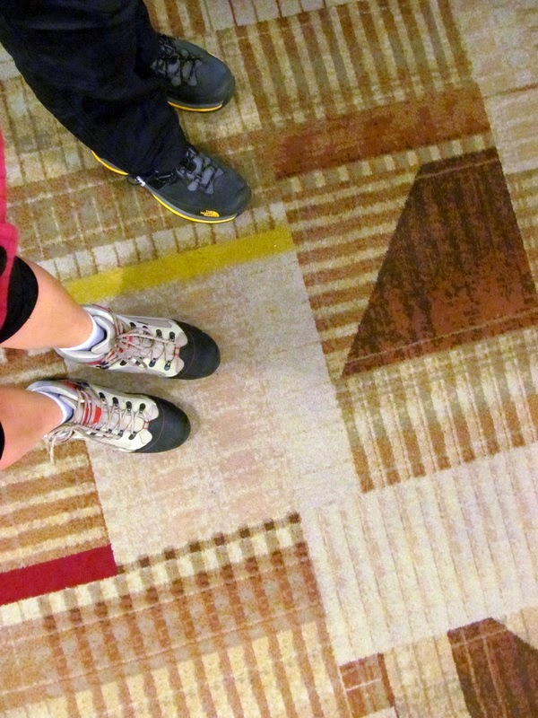
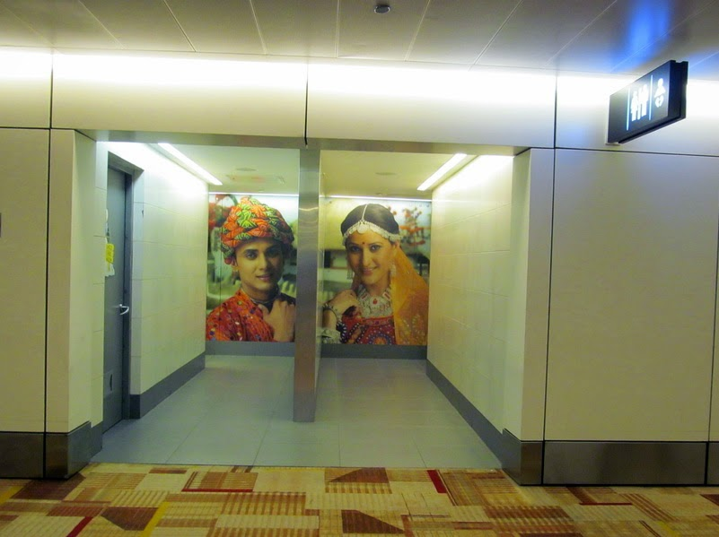
Мы сидели возле гейта, ожидая посадки, как девушки борт-проводницы продефилировали к трапу, а внутри поздоровались “Намасте”.
На экране во время перелета транслировалась полезная информация
Мы пробуем что-то из индийской кухни: чечевичную острую смесь, вегкотлету и лепешку с “иголками” Фрукты я не решилась пробовать, да еще и очищенные. А Леша - рисковый парень, попробовал, думал дыня и дыня цвета морковки, оказались 2 разные вещи
и обе не дыни
Над горизонтом показались Гималаи - гиганты, невероятны!
Через некоторое время Катманду… Из иллюминатора и с высоты похож на города Сирии или Палестины... Дома низенькие и неказистые, как показывают по Евроньюз.
Но всё же радость, Непал случится с нами и останется в памяти навсегда
28 сентября “Заводной Катманду”
Мягкая посадка. За нами приехал ТАТА - чудо индийского автопрома, эдакий тарантас 60х, который довез метров 100 до здания аэропорта. Из всего виденного нами далее - самый приличный.
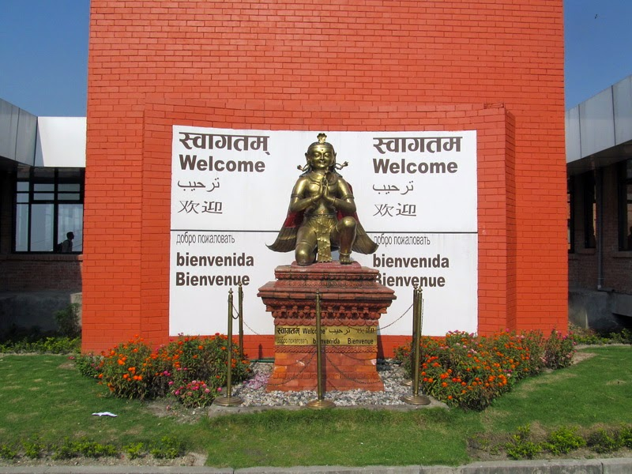
Непальская виза оформляется по прилету. Известно. Но что, и куда, и к кому - предстоит узнать!
Обычный стадный инстинкт, куда все - туда и мы Берем пример!
Заполняем disembarkation card (arrival card). По-моему, когда едешь в Украину, заполняешь точно такую же. В ней указываются: фамилия, имя, дата рождения, пол, паспортные данные, цель визита и его продолжительность, подпись.
Заполняем карандашом, т.к. ручки нет.
Потом становимся в очередь, оказывается не в ту: дезориентация в новом месте, как будто по привычке
Идентифицируем себя с людьми с рюкзаками, любопытными взглядами и направляемся в их сторону.
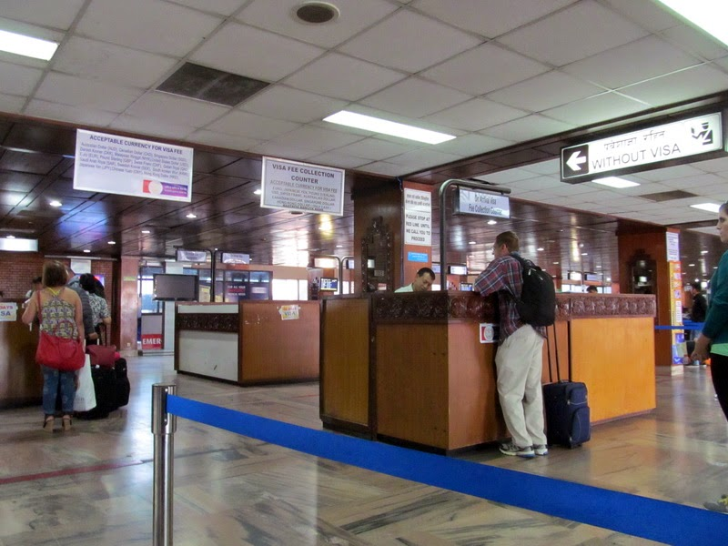
Сам процесс незамысловат и предельно понятен:
- стоишь в очереди;
- отдаешь карточку прибывшего и платишь визовый сбор (оплата в долларах либо любой конвертируемой валюте): до 15 дней - 25$, до 30 дней - 40$, до 90 дней - 100$;
- идешь к "своей"стойке (в зависимости от количества дней пребывания);
- отдаешь готовую анкету или заполняешь на месте, прикрепляешь к ней 2 фото (у нас не было с собой заполненной анкеты и даже формуляра и ручки. Любезно, с улыбкой, предоставляют формуляр и ручку);
- немного ожидаешь и получаешь паспорт с вклеенной при тебе же визой.
УРА! Теперь мы счастливые обладатели непальских виз. Заберем багаж и сразу в город!
Получение багажа - как повезет. Ожидаешь на одном транспортере, приходит на другой или вообще может валяться в общей куче, но это все мелочи, главное, что твой рюкзак, с которым ты будешь неразлучен долгие тяжелые дни, теперь с тобой! Долетел!
Будучи в Минске Лёша через форум Винского нашел перевозчика, организующего трансфер. Мы не хотели надолго задерживаться в Катманду и добираться перекладными местными автобусами (local bus) до Бесисахар ввиду лимита времени на прохождения трека.
Перевозчик Лёше перезвонил. Подтвердить заказ. В Минск.
Да, заказ был не на маленькую сумму - 100$ (поездки по Катманду + около 180 км до Бесисахар).
Но звонок, честно признаться, очень удивил!
Обещали встречать с табличкой ALEX MARIA. Так оно и получилось в реальности.
Выйдя из аэропорта к нам на всех порах подбегали трое (!) ребят, дабы другие не перехватили. Видно было - заждались. Очень взволнованно поинтересовались, чего же так долго, спросили откуда, услышав заканчивающееся на RUS слово, поприветствовали во второй раз “Добры дэнь!”
Рюкзаки похватали и закинули в багажник.
Меня пригласили в машину, Лёшу почему-то задержали на улице…
И быстро стало ясно почему… Чаевые вперед! Только непонятно для кого и за что.
Ну ладно, думаю, Непал страна бедная и чтобы отстали, достаю 1$. Но малец хитер, подмечает - белый человек от жары совсем не соображает, говорит: вижу у тебя есть 5$. Я в шоке от такой нахальности и видимо нахожусь под гипнотическим воздействием. Но оказывается и 5$ мало, надо ведь и за второго “помощника” похлопотать, поэтому просит еще 5$.
Да что за надувательство! И в тоже время, не зная конкретных договоренностей, думаю, наверное так надо… Хотя мне такой подход совсем не нравится!
Добившись своих нечестно заработанных долларов парнишки испаряются.
Вообще, в таких ситуациях я попадаю впросак, и только потом, обдумав, готова махать кулаками, только уже не перед кем. Остается мотать на ус.
Говорю Лёше, чтобы больше меня одну не оставлял. У него тоже деньги клянчили, только все, увы, были у меня.
Ну всё, выдвигаемся!
Маршрут: обменник - Nepal Tourism Board (получение пермитов) - Бесисахар
Катманду.
Это бесконечное движение, это смог, пыль, это хаос.
Шум, гам: непрекращающиеся сигналы мопедов и Сузуки, автобусов ТАТА и тук-туков.
Вонь, торговля на каждом углу и в каждой подворотне, люди-передвижные магазины.
Храмы и попрошайки в пробках и на улицах.
Провода наружу - лучи света.
Ты в машине, в ней безопасно, а за окном - будто кадры из кинофильма. Ты думал, что на самом деле такого нет. А такая жизнь существует.
Так сказать упорядоченная неразбериха: нет светофоров, зато есть полицейские с жезлами, нет пешеходного перехода - рука в сторону и спокойный размеренный шаг через дорогу, невообразимое количество транспорта, но скорость 10-15 км в час и нет аварий, тысячи бедных, но на лицах нет отчаяния или безысходности.
Катманду - калейдоскоп, водоворот жизни.
“Некоторые стараются скорее из него вырваться, им одного дня хватает “по горло”, першащее от пыли и выхлопных газов, другие и через 2 недели не могут отсюда уехать и каждый день обнаруживают все новые часовни и монастыри, дворы, где кипит деревенская жизнь, забавные магазинчики и сцены на рынке, заслуживающие отдельного снимка”.
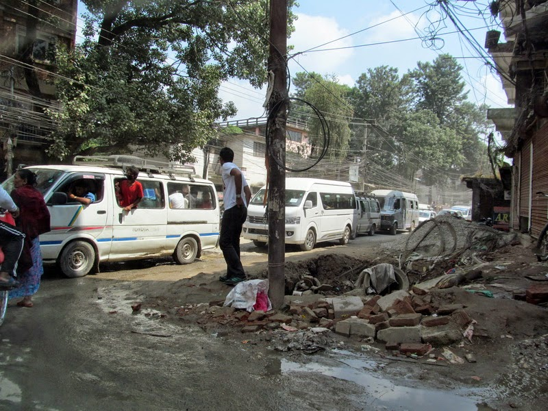
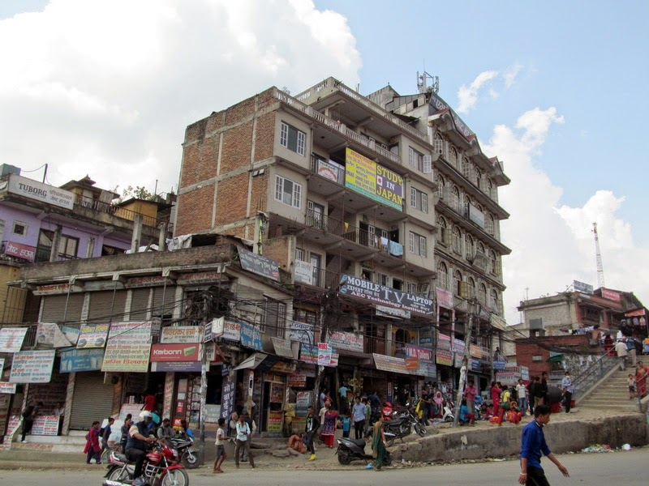
Мы в Тамеле - туристическом квартале, где магазин тур. снаряжения на магазине, отель на отеле, кафе/ресторан на ресторане и практически одни праздношатающиеся бледнолицые.
Водитель нас привез и провел почему-то в тур.агенство, а не обменник. Мы подумали, что нас хотят снова надурить. После совсем недавнего случая, я была начеку.
Нас пригласили присесть, курс назвали как в аэропорту - 96 рупий за 1 доллар. Нам это категорически не подходило. Решили покачать права.
Был сделан звонок, наверное, боссу. Следующая цифра - 97. Нет, не согласны. Водитель называл 99. Хотели сторговаться до 97.5. Но непалец уперся как баран.
Согласились на 97.
Предложил воду. Бутилированную. Насторожились. Куда-то ушел.
Я в это время побежала посмотреть в ближайших обменниках курс, чтобы не опростоволоситься дважды.
На 99,9 % была уверена - нас обманывают. Оказался курс 96.20. Тихонько вернулась обратно.
Вернулся и торговец, мы обменялись валютами.
В жизни не видели непальских рупий, чека не дали. Не принято это у них, видимо. Деньги были скреплены большой скобой, пронизывающей всю пачку.
Ну что ж, теперь едем оформлять пермиты - специальное разрешение, которое выдается в офисе NTB (офис по туризму Непала).
Нужно получить карту TIMS стоимостью 20$ (создана совместно NTB и TAAN чтобы гарантировать безопасность треккеров и контролировать незаконных треккинговых операторов).
Сам заполняешь карту, вырезаешь фото (благо, на столе были общественные клей и ножницы), тебе потом степлером к карте крепят его, ставят штамп, расписываются и готово!
Плюс разрешение на посещение Annapurna Conservation Area, которое тоже стоит 20$, напоминает чем-то чек. На обратной стороне краткий свод правил, что нужно, что нельзя и т.п.
При себе необходимо иметь копию паспорта и 4 фотографии 3*4 см.
Вообще совет: иметь 8-10 фотографий для оформления визы, заполнения анкет, получения пермитов.
Весь процесс занял около часа.
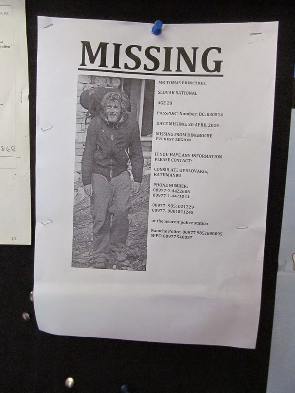
В полдень выезжаем в Бесисахар. Интересуемся:
- сколько займет времени?
- 6-7 часов (на секундочку - всего-то 180 км)
- дороги что ли плохие? (подразумевая, что долго)
- не, 40км в час
Ну ладно, на сегодня у нас больше планов нет, поехали!
Из Катманду выбирались почти час: постоянные заторы, пыль в открытое окно, запахи…
А потом начался спуск в долину по крутому и опасному серпантину. И это было страшно, т.к. создавалось впечатление, что мы постоянно уворачиваемся от шальных встречных грузовиков и больших автобусов.
Сигналят все. Все абсолютно. Если ты не сигналишь, значит тебя на дороге нет. Хаос.
И еще это непривычное правостороннее движение.
По дороге нас постоянно сопровождал вид на хлипкие лачужки
Дорога действительно казалась бесконечной. Нас разморило, но мы старались не спать вместе, только поочередно, чтобы “контролировать” происходящее, не завезли ли нас в какую-нибудь хибару, чтобы ...
Но вот мы встали. На часах четыре дня. Пробка. Глазею в окно
Парниши из следующего за нами тарантаса вышли на свежий воздух и развлекались состязанием: кто дальше кинет камешек? Насобиралась приличная толпа.
Около 17.00 остановились в каком-то городке, надеялась, что всё - приехали. Но водитель предложил перекусить, потому как ехать еще 3 часа. Знакомьтесь, непальская действительность. Какие планы?! Надейся на удачу.
_files/IMG_6346.JPG)
Я смотрела на всё окружающее и меня оно не радовало. Я попросту боялась. Трусиха!
Смеркается в Непале около шести, а полная кромешная тьма наступает в 18.30. Освещения никакого, только мелкие огоньки где-то вдалеке на гималайских холмах, как ощутимый образ чего-то уютного.
Перед поворотами водитель сверкает фарами и сигналит. Едем медленно, тает надежда, что сегодня приедем в Бесисахар. Едем. Какие-то лица , журчание бурных ручьев под днищем машины, пустота.
К 8 вечера водитель останавливает машину возле чего-то похожего на кафе, рекомендует, что здесь же хороший гест хаус. Значит это Бесисахар! Свершилось! Мы не против, ведь идти в ночь в первый день в Непале в поисках чего-то и куда-то совсем не хочется.
Мы расплачиваемся в рупиях, даем "на чай".
Я жму ему руку и говорю, что он самый лучший водитель! Он действительно оказался очень аккуратным, вежливым и опытным.
В гесте нас встречает мальчик и его отец. Мальчик ведет переговоры, видимо, он лучше знает язык (язык общения - английский).
Стоимость комнаты называют после того, как посмотришь. А они видно посмотрят на твою реакцию
Мы удивлены опрятностью и наличию телевизора в номере. Без торга соглашаемся.
Туалет и душ на этаже.
Ужинаем чесночным супом, лапшой типо доширак и запиваем лимонным чаем. В основном все это поглощал Леша, а я пока осматривалась
Завтрак положено заказывать с вечера, берем Set Breakfast на 6.30.
И засыпаем сном младенца. Приключения ждут впереди!
29 сентября. День первый. Понедельничный
Маршрут и высота: Besisahar (800 м) - Bhulbhule - Ngadi Khola - Bahundanda (1 275 м) - Ghermu (около 1 100 м)
Пройденные км и время: 21.5 км, 07.20-17.30
06.00 Доброе утро!
Наш первый день треккинга, наконец-то! Хочется быстрее позавтракать, собраться и выдвинуться в путь!
Чищу зубы на коридоре открытой площадки, т.к. только там умывальник, с водой из бутылочки, но т.к. за мной очередь из американца и непальца, то временами забываю и полощу зубы водой из-под крана…
Спускаемся на завтрак, под лестницей из непонятно какой трубы на полу моют посуду руками. Эх, что-то у меня аппетит пропадает
Завтрак: омлет, 3 тоста, фрукты (чищенные!): банан с отпечатками того, кто чистил и яблоко. По соку 0.2 л в упаковке. Ммм…
Лёша уплетает, а я так... ковыряю для приличия, подслушивая разговор американца с его портером. Американцы - они такие уверенные, такие крепкие, такие оптимистичные!
Расплачиваемся за ночлег, ужин, завтрак и кипяток. В 7.20 выходим, отмечаемся на чек-посте и на трек!
Сегодня день тропиков и рисовых полей, так написано в книге Андре, которой мы руководствуемся. Он советует ни в коем случае не пропускать равнинных местностей района Аннапурны и мы не пропускаем! Хотя джипы могут завезти вас гораздо дальше (аж до Мананга 3 550 м - 6-7 день треккинга)
Начинаем с форсирования речки, пересекающей дорогу. Непальцы ходят в шлепках и скачут в них по камням очень ловко. А мы разуваясь и неуклюже, переваливаясь с одной части ступни на другую из-за острых камешков.
Навстречу попадаются задорные улыбающиеся мальчишки и каждый из них подходит пожать нам руку
Перед нами шагает человек-куст
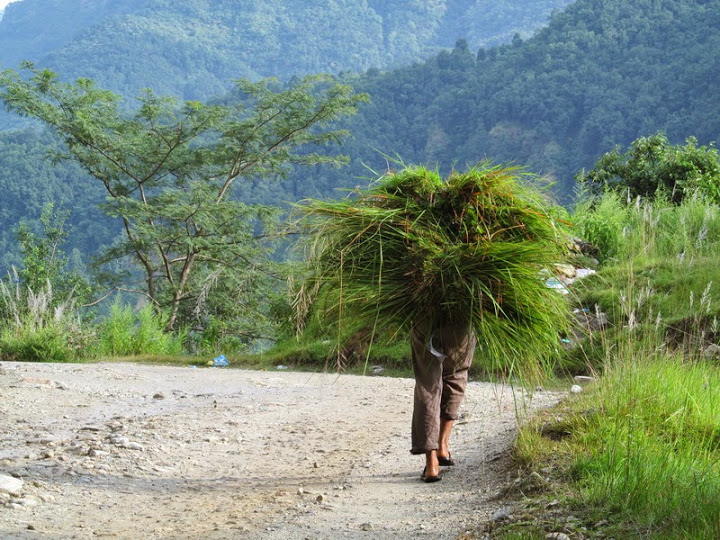
Хоть и утро, но уже пригревает солнце + влажность. Денёк будет горячим.
Входим в небольшую деревню, подбегают ребятишки (2-3 штуки) и тянутся прикоснуться к рукам. Вроде белый человек для них что-то этакое значит
Тут Лёша произносит роковое:
- может угостим конфетами?
Ну а я что, не жалко, у нас их 1,5 кг. Хотя путеводители пишут, что непальских детей треккеры давно закормили сладостями, один сплошной кариес, лучше им карандаши, игрушки привозить.
И вот я достаю пару конфет, как откуда ни возьмись, со всех дворов пчелиным роем к нам летят 8-10 детей и теперь ручонок не 2-3, а в 5 раз больше! И главное, по мере доставания заветных конфет, количество рук не уменьшается)
Но решаем пробираться и двигаться дальше, говоря No sweet! Двое мальчишек бежали еще долго вслед, надеясь заполучить сладость, но мы уже были непоколебимы!
_files/04.JPG)
В другой деревне мы видели мощные многостволистые деревья
Блеющего козла на плечах юнца, видимо, несущего его на бойню
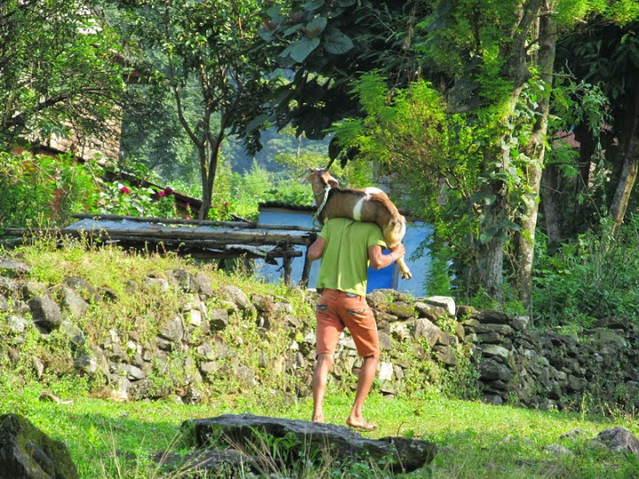
И в этой деревне нам пронзительно кричал детский голос: Namaste! Naa-maa-steee!
Чудесная страна! Столько необычного!
А Лёша тем временем придумывает, чтобы такое сделать, чтобы жизнь медом не казалась
И находит тропинку, которая заканчивается каменной осыпью…
Лёша храбрый, все-таки ПГшник, карабкается настойчиво вперед, что макака, только камешки около меня свищут. Я же занимаю позицию притаившегося горного козла, грустным взглядом окидываю открывающиеся красоты: “Эх, Гималаи, я так и не увижу всей вашей мощи!” - восклицаю про себя, т.к. надо ползти за мужем, а на успех сего действа я не надеюсь.
Но тут, рядом совсем, метров 20 выше нас, проходит старик и жестикулируя, указывает на обход справа по хорошей тропе и очень настойчиво рекомендует (жестами) нам не продолжать этот путь! Ура, хоть кто-то на моей стороне. Вприпрыжку следую совету
Рядом с нами бойко идут люди-мешки
На дереве прохлаждается рабочий
Мы у поворота на Бульбуле. Из соседнего дома выходит девочка, такая приветливая, интересуется, куда мы направляемся, указывает на Бульбуле, думая, вероятно, что оказывает нам большую помощь и следом произносит: sweet, chocolat!
Ожидая, что и в этой деревеньке затаилась орава детей, говорим No.
Девочка выжидает и… замечает в боковом кармане Лешиного рюкзака сок, который нам дали на завтрак. Показывает на него пальцем.
Ну и дела… Как-то не по себе. Нам сока не жалко, но впечатление не самое приятное пока от общения с непальскими детьми.
Ребенок улыбается, довольный добычей, и удаляется.
Мы же спускаемся в Бульбуле.
Здесь впервые закупаемся бутилированной водой: на ней этикетка и термоусадочная пленка. В общем, всё как положено, будем верить
Идем по основной дороге, пыльно, солнце палит во всю.
Проходя мимо стройки, нас замечает мужчина и т.к. уже время ланча, рассказывает, что совсем скоро будет лодж, в котором можно отланчить, расписывает Лёше все прелести этого места, я же пока намачиваю баф в спасительном водопадике.
Благодарим его и идем дальше, через пару минут он нагоняет нас на мотоцикле, улыбается самой сияющей улыбкой и едет вперед. Вот мы у деревни, и вот он первый лодж. Этот мужчина снова сияет и показывает нам меню, показывает место ланча и говорит, что нам непременно нужно у них пообедать. Нам понравится.
Вообще, мы бы могли поучиться такому радушию (наши гостиницы, кафе и в целом сфера услуг Вообще, именно в таких лоджах лучше всего обедать и останавливаться на ночлег, где тебе рады и тебя ждут
Но мы недовольны собой, слишком мало прошли, чтобы позволить сейчас себе обед. Благодарим, извиняемся и идем дальше.
Присаживаемся выпить чая с видом на долину реки Марсянджи, рядом присаживается пожилой непалец, не говоря ни слова. Вот так и сидим, любуемся…
Далее путь следует через Бахунданду, в одном из лоджей еще покупаем 2 бутылки воды (так дешевле, но уже дороже, чем в Бульбуле). Здесь 4 треккера на передышке, русскоговорящие. Будем идти с ними почти нога в ногу вплоть до Муктинатха, что после перевала. Они в восторге от здешних гор и рек
Мы поднимаемся выше, на серпантинном подъеме нас догоняет совсем еще малышка с цветочком и с криком: Photo! Photo! (фотоаппарат у меня всегда в руках) Настойчиво следует рядом со мной. Но, т.к. я проявляю пока равнодушие к фото за деньги или конфеты, со временем она отстаёт.
Эх, не нравится мне это. Не выработалось пока отношение ко всему этому или день просто такой… низкогорье…
Время обеда, наш первый обед в Непале (лодж Манаслу в Бахунданде). Попробуем местную еду! Выбираем момо с тунцом (хоть не мясо, так рыба) и лимонный чай. Момо - тибетское блюдо, а с виду так и вообще наши вареники (т.е. славян). Очень вкусные! Пальчики оближешь!
К слову сказать, без Кока-Колы вы в Непале не останетесь, ее продают на каждом шагу, в каждом лодже. Постарались американцы на славу, дабы заполонить ею весь мир и даже Гималаи
Лодж Манаслу официально зовется Hotel Manaslu and Restaurant, но внутри все по-деревенски захламлено и незамысловато.
До конечной точки сегодняшнего маршрута (Ghermu) остается 2-2,5 часа хода (около 6 км). День попрошаек скоро завершится
Ну а пока, на выходе из Бахунданды, почему бы мальчугану не поклянчить чоколат
Приближаемся к спуску и вдруг нам открывается такой сказочный вид на долину реки Марсянджи, залитую закатным солнцем, переполненную сочной зеленью, рисовыми террасами, и всё это в обрамлении самых могучих гор!
Как декорации к фильму “Малефисента”, необычайной красоты!
_files/25.JPG)
На противоположной стороне от тропы вьется автодорога, не назвала бы ее надежной, но джипы, за баранкой которых сидят бесстрашные непальцы, по ней передвигаются.
Мы подошли к Ghermu, выбираем лодж.
Пока выбираем, встречаем непременный атрибут непальской жизни - собаку, которая откинула лапы. На самом деле она цела и невредима, просто вид у нее такой, умиротворенный
Настоящий буддистский пёс!
Еще были замечены вороные коровы
Прошли до конца Ghermu и остановились в последнем лодже с мелодичным названием Rainbow с видом на водопад. Хозяйка проводила нас в комнату на втором этаже с собственным (!) санузлом.
Комнатка маленькая, но уютная.
А туалет призабавненький. Крышка унитаза не держит положение стоя вверх, а при смыве из трубы хлещет вода, растекаясь по полу, и из душа постоянно капает в зеленое ведёрко “дзинь-дзинь-дзинь”, создавая тем самым особую атмосферу по ночам.
Берем!
Цену они называют уже после осмотра + если у них завтракаешь и ужинаешь, то стоимость за комнату может быть ниже обычного прайса или же вообще бесплатно.
Да и цена комнаты по нашим меркам очень скромная: 100-400 рупий (1-4 доллара и душ бесплатный, а не то, что в Норвегии, за всё плати
Ужинаем, принимаем душ, во время которого отрубается свет и т.к. темнеет в горных районах Непала очень рано и тьма эта абсолютно кромешная, то чувствуешь себя кротом, благо выручают современные технологии в виде телефона с фонариком
Так закончился вечер трудного дня. Трудного, потому что это понедельник, это знакомство с новыми людьми, детьми, гималайскими пейзажами и непальской действительностью. Дальше будет привычнее.
Namaste
30 сентября. День второй.
Маршрут и высота: Ghermu (около 1 100 м) - Syange - Jagat - Chamje - Tal (1 700 м)
Пройденные км и время: 12.2 км, 08.00-14.30
Вид из окна и вправду чудесен!
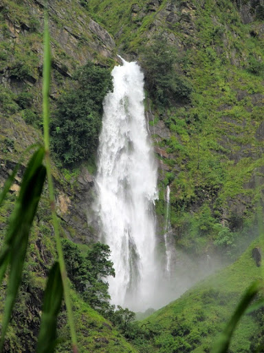
И завтрак обещал быть лучше, чем вчера Мы заказали apple pie, что значит шарлотка, и жаренный картофель с чаем.
Обычно европейцы завтракают кашкой, мюслями или омлетом, но мы решили брать более-менее проверенные блюда
И вот приносят мне такой вкусный пирог, а на тарелке в цвет пирога сидит и смотрит на меня непальский таракан. И я тоже смотрю на него и думаю: наверное так надо, наверное, это местная особенность, что зовется колоритом.
Таракана убираю в сторону, пирог то все равно вкусный И с аппетитом начинаю его поглощать!
Позавтракав, мы отправились в путь-дороженьку.
Глаза продолжал радовать спускающийся каскадами впечатляющей высоты водопад.
Дорога временами приобретала характер горной речушки. И как тут умудряются ездить груженые джипы?!
Мы взбирались по серпантину, внизу маячили портеры, боюсь представить, сколько кг они несли на своей голове…
_files/IMG_6585.JPG)
Если Вам стало жалко этих парней, вот что об этом думают авторы путеводителя “Полиглот”:
“Многие чувствуют себя неловко, шагая налегке с непальцем, который тащит 2 рюкзака. Но неловкость здесь неуместна: для него это работа, и если его не наймет турист, ему придется наняться к местному торговцу, который нагрузит его вдвое, а заплатит меньше. А если и такого не найдется, то придется ему и дальше стоять в городе в ожидании клиентов”.
Стоить его услуги будут примерно 6-10$ в день за 2 рюкзака, опять же ссылаясь на путеводитель “Полиглот”.
Как говорится, думайте сами, решайте сами, иметь или не иметь
С утра мы шли по дороге, поэтому иногда встречались шальные джипы и лучше было переждать их проезд у скалы, т.к. качает их в стороны здорово! Так же советуют поступать, когда навстречу попадается караван навьюченных яков.
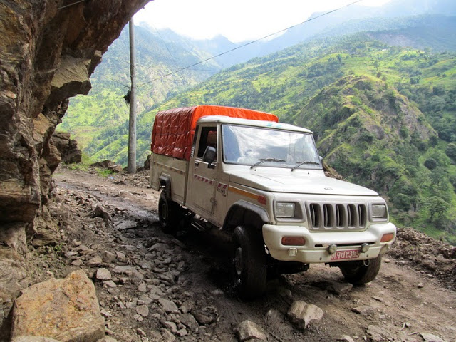
Чуть зазеваешься, останешься стоять у края и можешь полететь далеко вниз, пока не окажешься в холодных водах реки Марсянджи.
Ищу равновесие. Непалец, наблюдая за этим, лишь ухмыляется. Он прыг да скок и уже преодолел препятствие. А мы лишь учимся балансу!
Вот показался Джагат (1300 м)
Шоппинг центр в центре деревеньки
Прекрасный гест хаус The North Face: River View в конце Джагата
Цвет, кстати, тоже немаловажен при выборе лоджа. Если лодж свежеокрашен, значит хозяева следят за ним и ждут больше гостей. Смелее входите!
А у нас снова: Дети!
На этот раз такие милые, просто решили прогуляться с Лёшей, подержать его за руку, рассказать ему о том, о сем на своем, местном
Милейшая картина
А потом наши пути разошлись: детей окрикнула женщина, а мы свернули на треккинговую тропу в обход дороги.
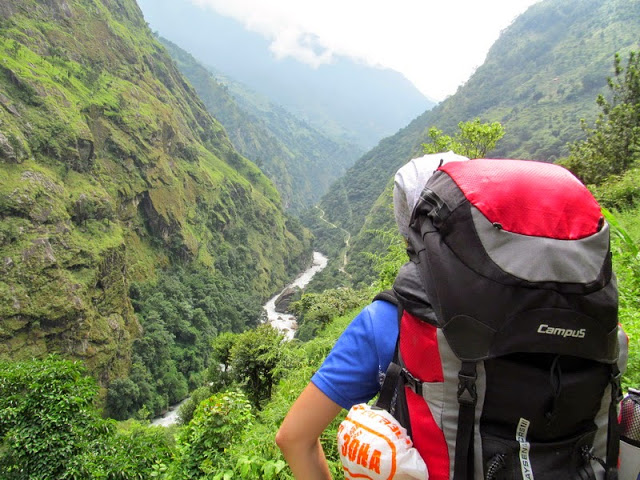
В верхнем Чамче нас почти из каждого лоджа зазывали на ланч. С одним зазывающим мы разговорились, объяснили, что рано еще (около 11 или 12 было), а он спрашивает, а где вы планируете обедать, ну мы предположили, что в Тале, тогда он рассказал про свою сестру, которая владеет очень хорошим лоджем и там очень вкусно можно пообедать Спасибо, добрый человек, за совет)
Проходим Чамче
Перебираемся на левый берег реки через подвесной мост
Река бушует, погода портится, прилетают тучи, становится ветрено
Здесь уже декорации напоминают Властелина Колец
Раз дощечка, два дощечка - вышел домик
Райское местечко на краю обрыва
Сделали остановку на чаепитие и сникерс.
Тишина… И только какое-то активное шебуршание позади нарушает покой.
Осторожно поворачиваемся, а с близлежащей горы спускается армия лангуров - обезьян с длинными хвостами… У меня аж сникерс вывалился от испуга. Как представила себе этих воришек, которые срывают у меня баф и крадут наш термос, так не по себе стало. Мигом свернули свой пикник и быстрой походкой направились вперед по треку, только вот он проходил ровненько рядом с той горой, которую захватили или всегда обитали на ней эти черномордые обезьяны.
А они все шебуршат и шебуршат и кажется, что находятся совсем близко.
Я не выдерживаю, ведь расставаться с бафом совсем не хочу, и кричу со всех сил: А ну пошли вон!
Может и поступила не совсем умно, зато мне стало спокойнее. А на пятачок, на котором мы устроили чай паузу, пришла большая группа пожилых треккеров с портерами, макакам останется, на кого нападать
Мы совсем недалеко от Тала
Подходим к табличке с расстояниями по треку. Они отмечены в часах, а не в километрах.
Нас обгоняет бодрый француз, с ним тоже будем идти почти параллельно до базового лагеря в Торонг Пхеди.
Следуем дальше
Ого! Какой вид на Тал, широкую долину и спокойную Марсянджи под покрывалом облаков и дымки. Великолепно!
Проходя черед стадо коров, Лёша опрометчиво шагает чуть ни касаясь двух телят и мгновенно на него следует резкий выпад рогами от мамаши, так что я пошла, делая хороший круг около этого семейства, только бы не вызвать их негодования.
Тал оказался большой деревней с многочисленным гест хаусами и лоджами на любой вкус.
Вот, например, в стиле Гавайев
Ну а мы идем прямиком в Marsyandgi Hotel, как ранее нам советовали.
Хотим лишь пообедать, т.к. сейчас около 15.00, а еще 3 световых часа. Мы же пока придерживаемся экстрим-плана (за 13 дней пройти весь трек вокруг Аннапурны).
Хозяйка сразу пытается склонить нас к ночлегу у них (ведь это значит, что мы еще закажем ужин и завтрак), к тому же дождливо совсем, зачем же сегодня продолжать треккинг?
Не говорим утвердительного да, подумаем.
Мы очень голодны и заказываем аж три порции момо. Вид из окна суров
Пузо набилось до предела, за соседний столик присел обогнавший нас француз, остановившийся здесь на ночлег, а хозяйка очень мило улыбалась. Ну как тут откажешь. Решаем остаться, но на следующее утро выступать на трек без завтрака.
Вид из окна комнаты был такой, как обещали, на водопад
_files/IMG_6777.JPG)
Оставшуюся половину дня мы просушивали вещи, писали дневник и приятно проводили время в общей комнате среди шутливых французов и за чашкой горячего какао.
1 октября. День третий.
Маршрут и высота: Tal (1 700 м) - Dharapani (1 900 м) - Bagarchhap - Danaque - Temang (2 510 м) - Thanchouk - Koto (2 640 м)
Пройденные км и время: 20 км, 06.30-18.00
По утру хозяйка провожала нас печальным взглядом, т.к. мы уходили от них, не позавтракав.
Но не хотелось терять времени, хотелось шагать как можно быстрее. Тем более утро - прекрасное время для созидания местных красот.
А желудок был не согласен шагать без завтрака и довольно скоро открыл свой обжористый “рот” задористыми звуками.
Мы его кормили и конфетами, и разными видами орехов, но орехи были как жеваная бумага по вкусу, и леденцы тоже не давали никакого эффекта.
Мы старались оставаться оптимистами
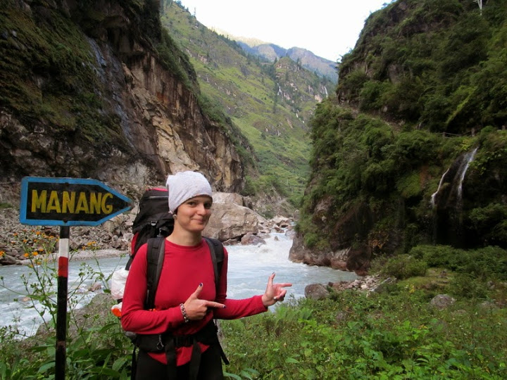
Вокруг - красота, в воздухе - свежесть и ни души!
_files/5.jpg)
Как бы мы не умирали от журчания в желудке, ресторан Леди Бёрд нас не смог заманить
Старое и новое
Дойдя до Дарапани, мы остановились чуть ли не в первом попавшемся лодже, хозяйка улыбалась и сразу почувствовала, что перед ней голодные странники.
Мы разместились на веранде и заказали самое популярное блюдо у портеров - дал бат (что значит суп из чечевицы + рис + возможны разные вариации гарнира (бобы, сезонные овощи, жареный картофель и т.д), неизменны только чечевица и рис).
А добавки риса можно просить столько раз, сколько угодно Да и хозяева сами часто предлагают.
Дарапани растянут на расстояние в 1,5 км и состоит из трех небольших деревень. Здесь же находится чек пост, на котором мы отметились.
За деревней от главной дороги следует поворот направо, тропа уходит на трек вокруг Манаслу - еще одного восьмитысячника. Насколько мне известно, трек этот не для одиночек, без гида его не пройти и пермиты различные обойдутся дороже, чем вокруг Аннапурны, зато пишут, что он более дикий и местные жители еще не испорчены чужой культурой
Для тех, кого заинтересует, читайте англоязычные сайты и отчеты на форуме Винского (есть совсем свежие, за 2014 г.)
Не прошло и часа, как мы дошли до Багарчапа, небольшой деревушки с несколькими лоджами. В течение 25 лет здесь случалось несколько крупных оползней после сильных ливней и погибло даже несколько треккеров.
Спустя некоторое время мы дошли и до местечка Danaque, увидели треккинговые рюкзаки в одной из лодж и решили пообедать тут же.
Кстати, заказ оформляешь в специальном блокноте (так во всех лоджах и гест хаусах, которых мы были. Им, наверное, так удобнее потом расчеты вести)
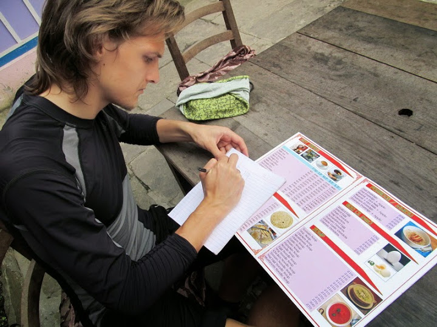
В этом лодже нас никто не зазывал, хозяева занимались своими делами и видимо не особо были рады нам… Но заказ сделан, теперь ожидаем, попивая чай с мятой.
А вокруг:
Лежит большой пёс, откинув лапы, а рядом делают колбасу “пальцем пиханую”. У меня не было бабушки в деревне, поэтому то, что я наблюдала сейчас, меня просто приводило в полуобморочное состояние. Кишки и кровище... И прохожие треккеры тоже столбенели перед этой картиной _files/amazed.gif) Куда им европейцам, понять, что здесь такое происходит, на переднем дворе лоджа. Куда им европейцам, понять, что здесь такое происходит, на переднем дворе лоджа.
Малой хозяев сначала присел с нами за стол и произносил что-то нечленораздельное, как-будто напевая песенку. А потом решил поиграться со столовыми приборами прямо на столе
Нет, аппетит не пропал, мы просто достали свои приборы.
Малыша после какого-то промежутка времени все-таки убрали со стола и где-то примерно через час после заказа принесли гарлик (чесночный) суп, который состоит собственно только из чеснока
В общем не до нас им было, как никак период фестиваля Дашайн - самого важного и популярного праздника в Непале в честь богини Дурги, который длится целых 15 дней. В этот период принято собираться с родственниками в большом семейном кругу. Поэтому зачастую довольно проблематично приобрести билет на local bus между деревнями.
Зато за время ожидания мы познакомились и поболтали с веселым рыжеволосым парнем Ником из Нидерландов (Амстердам), который шел в одиночку.
Расплачиваясь за обед, мы решили подарить мальчишке небольшую машинку, которую специально купили для кого-нибудь из непальских детей еще в Беларуси. Но он куда-то убежал, поэтому отдали его матери, надеемся она ему передала… и надеемся он не будет впредь играть с ножами и вилками
Выходя со двора, мы увидели, как к воротам подъехала машина и оттуда вывались дети и взрослые с большими тюками. Теперь стало понятно, почему нам были не рады - они ждали других гостей
Ну ладно, выводы мы уже сделали и вам озвучили. Заходите в те ложди, в которые Вас зазывают и Вам улыбаются
А вот и знакомый малец-удалец. Обертку он после фото так и выкинул Какие мусорки!?
Местность после Danaque очень стала напоминать родные леса Беларуси, а чем-то и южно-сибирские просторы. Высотную поясность никто не отменял
Невероятно! Я не знаю, из чего и где сделаны эти машины, как выдерживают это колеса?!
На одной из развилок нас нагнала пара из Финляндии, милые ребята.
Когда мы проходили Тиманг в одном из лоджей нам махала рукой хозяйка, широко расплываясь в улыбке. А с крыши на нас смотрел один из знакомых финнов. Они уже стали на “стоянку”, на часах было около трёх дня.
Пошла активная пропаганда в бой, какой классный этот лодж и уже пора бы на отдых, но мы были не отступны в нашем желании двигаться дальше.
- и куда же Вы идете? - спросила хозяйка
- до Чаме
В ответ от нее было услышано насмешливое раскатистое Good Luck!
По путеводителю это около 3,5 часов. Немало, но это ведь и не первый день треккинга, чтобы сдаваться. Полный вперед!
_files/27(1).jpg)
Деревья-зубочистки
Стадо парнокопытных, некоторые особи проявляют чудеса эквилибристики!
Встречаем непальца, который сразу лезет обниматься Видимо, у меня еще слишком белый цвет кожи. Надо срочно загореть!
Он рассказывает нам про свою лоджу в Тянчёке, но в целом говорит на не очень понятном английском, поэтому мы прощаемся и идем дальше.
Интересная развилка: налево пойдешь - в Чаме попадешь, направо пойдешь, тоже мимо Чаме не пройдешь. Сворачиваем налево
Вот показался Тянчёк, по совету встречного, решили посмотреть, что за лоджа, про которую он рассказывал. До Кото примерно час пути, до Чаме чуть больше.
Издалека мне этот Тянчёк сразу не понравился.
Но решили все же прогуляться, т.к. увидели бродивших там треккеров.
Простых путей не искали
_files/47.jpg)
Знаете, наблюдаемую картину жизни в этой деревне европейцы зовут “традиционным укладом”, я это называю “как свиньи в хлеву”
Здесь можно снимать фильмы про средневековье. Помои сбрасывают или сливают со второго этажа прямо на улицу, на первых этажах - скот, на вторых - люди. Так и живут… Люди приветливы, но задерживаться тут надолго совсем не хочется.
При выходе из деревни была разыграна сцена “Стенка на стенку”
Тут ко мне подходит пожилой пастух, говорит что-то на непали и жмет мне руку. Что в ответ могу я - только улыбаться
Понеслась
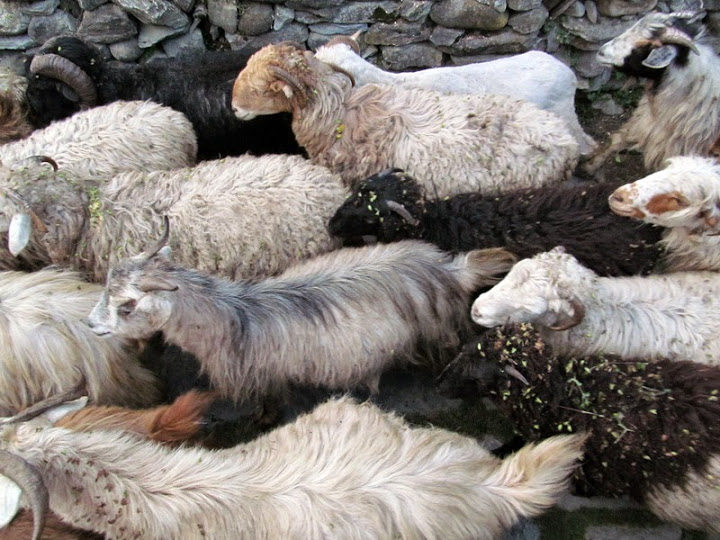
Когда покинули пределы Тянчёка сразу стало легче, надеюсь таких деревень на нашем пути больше не повстречается.
Шли бодро.
Смеркалось, мы подходили к Кото, до Чаме еще около 30 минут хода.
Раздумываем, идти не идти.
Рядом лодж, из окна выглядывает приятная девушка и приветливо произносит: наайс рум, хот сауэр (милые комнаты, горячий душ). С первого раза не подействовало, т.к. мы еще витаем где-то. Тогда она повторила это еще более сладким голосом
Лёша спросил: а вай-фай есть? Ответила есть.
Ну всё, что тут думать, остаёмся
Кстати, интересная особенность. Непалец может жить в самой убогой лачуге, но у него будет! тачскрин телефон
2 октября. День четвертый.
Маршрут и высота: Koto (2 640 м) - Chame -Bratang - Dhikur Pokhari - Upper Pisang (3 400 м)
Пройденные км и время: 16.5 км, 07.30-16.00
Утро открылось видом на Аннупурну вторую (7937 м). На четвертый день мы наконец-то увидели настоящие, могущественные, несравненные Гималаи!
Позавтракав, мы вышли и последовали в Чаме, но были остановлены общительным служителем закона на чек посте, который предложил присесть в его каморке, пока он будет заполнять сведения о нас в журнал.
Мы отдали ему свои карточки треккера и стали ожидать.
А он не унимался с допросами:
- муж мы и жена? или нет? сколько нам лет? сколько мы уже женаты?
- а знаем ли мы, как будет по-непальски супруги? Нет, но мы разучили: он произносил, мы повторяли
- а наша страна бедная или богатая? (я ответила бедная, но думаю он нам не поверил. Ведь те, у кого хватило денег прилететь в Непал, не могут быть бедными, они априори богаты!)
и много-много подобных вопросов.
Потом он увидел, что у меня 2 кольца на разных руках (помолвочное и обручальное) и попросил подарить ему одно, т.к. у него нет ни одного)) С тех пор я ношу 2 кольца на одном пальце, чтобы привлекать меньше внимания
У Лёши видеокамера интересным образом торчала в кармане и наш любопытный знакомый не преминул поинтересоваться, что это такое, посчитал, что это пистолет
В общем, довольно странный служитель закона, встретила бы на улице с подобными вопросами и просьбами, вызвала бы полицаев
А вот и он собственной персоной
Наконец-то мы свободны и можем двигаться дальше.
Утро было свежим, ночевать только в спальнике стало прохладно (высота 2 600 м), благо в комнатах уже предусматривались одеяла.
Чаме оказался крупной деревней или даже городом. Здесь тебе и большая торговая улица, и почта, и банк, есть полицейский участок, администрация района Мананг. Здесь также много лоджей, очень разных.
Например вот такая, как дворец Махараджи
Полезные советы (такие таблички встречаются повсеместно в регионе Аннапурны: они рассказывают о достопримечательностях, особенностях региона, демонстрируют картосхемы или дают советы).
Далее мы перешли на левый берег по весьма жизнерадостному мосту, хотя судя по количеству молитвенных флажков место не совсем надежное
Горячий душ от солнечной батареи
На выходе из городка светилась на солнце очень красивая ступа.
Цвели поля с цветами, а яблони были полны яблок
_files/IMG_7004.jpg)
Мы шли по дороге, т.к. пропустили поворот на треккинговую тропу. Дорога была хорошей, листва деревьев создавала комфортную тень. Были подъемы, пологие участки и спуски. Мне местность отчего-то напоминала Скалистые горы Америки, хотя я там еще не бывала. Но ощущение было именно таким: скалы, ели, бирюзово-голубая вода горной реки и обязательно cолнце.
На одной горочке мы услышали знакомый шорох покрышек.
Ба, да это велосипедист! Завидев нас, он решил прогуляться с нами и поболтать.
Общение с треккерами или велосипедистами на маршруте - это нереально круто! Люди на таком позитиве, настолько восторженны и возбуждены. От них летит такой заряд положительной энергии, что ты просто идешь еще долго и улыбаешься и думаешь вот какие эти люди молодцы! Как здесь здорово! Эйфория!
Это оказался австриец, который живет сейчас в Китае и очень любит мтб. И он в грандиозном восторге от Гималаев, и хотя это его первая поездка, но далеко не последняя по его заверениям. Ему очень и очень здесь нравится)
Наш восторженный друг укатил вперед, когда начался пологий участок.
На смену ему подоспели еще трое на железных конях, уже из Германии. Наипозитивнейшие, общительные, веселые, крепкие ребята! Один с нами особо разговорился, расспросил про Беларусь, про планы, договорились с ними встретиться в Писанге (у многих ночлег сегодня будет именно в этой деревушке, т.к. на высотах больше 3 000 м желательно подниматься не более 400-500 м, чтобы акклиматизация проходила как можно безболезненнее).
Мы дошли до Братанга в окружении яблоневых садов. Некоторые части трека кольца Аннапурны прям так и называют - “яблочные пироги”, потому как они встречаются в меню каждого лоджа.
После Братанга дорога плавно уходила направо и то, какой формы открылась нам гора после поворота, изумило нас. Вот смотришь на нее и не понимаешь, существует ли она на самом деле или это какое-то зрительное искажение.
Андре в своем путеводителе называет ее тарелкой для супа, а местные жители - Swarga Dwari (ворота в небеса).
Мы перешли через подвесной мост на другую сторону реки, поднялись на несколько сот метров по серпантинной тропе и оказались в густом лесу.
На перекрестке дорог сидели этакие Дети Цветов (парень с девушкой), у них была небольшая гитарка и они напевали мелодию очень красивыми голосами. Были весьма расслабленными, загадочными и влюбленными.
Мы постояли, повтыкали в навигатор. Парень подсказал, что лучше идти по тропе дальше вверх.
Мы последовали его совету и оставили наших знакомых романтиков в уединении.
Лес был чудесный, даже сказала бы, что волшебный, как-будто временно перенесся куда-нибудь в Зеленое или Налибокскую пущу. Узкие тропы, камни вперемешку с путаными корнями и опавшими еловыми иголками, нависающие сучья скорчившихся деревьев, поляна с развешенным по периметру флажками, напоминающее древнее капище - мурашки по коже.
Здесь мы встретили одинокого портера с большим тюком. Он задал стандартный набор вопросов (откуда, где эта страна на земном шаре находится, куда идем сегодня) и решил, что нам нужна его помощь. I help you повторял он, что заведенный. Мы улыбались, пока не обращая внимания на его навязчивость. Он опередил нас, а мы, не спеша и любуясь окружающим, топали в Dhukur Pokhari, где и думали пообедать.
Притопали к первому лоджу, здесь скучковались очень многие треккеры, которых мы уже встречали на пути.
Здесь мы и встретили того самого портера, который начал советовать пообедать именно тут, мол, очень и очень вкусно. Но это и так понятно, раз столько бледнолицых собралось.
Сделали заказ, хозяйка лоджа не подходила, тогда тот самый портер решил проявить инициативу, взял блокнот и отнес на кухню.
Мы думали, он наверняка хочет “срубить” с нас денег за оказываемые им услуги, но платить ему были не намерены.
Вообще, ты можешь гордиться, что несешься свою поклажу на себе, не пользуешься услугами гида. Но вот непальцы воспринимают это не совсем позитивно. Ты прилетел сюда, а значит у тебя есть деньги, но ты экономишь, не нанимая портера и сопровождающего.
В одном отчете прочитала про Манаслу трек (источник форум Винского, автор G-Man):
“Встреченная нами на трекке француженка, итальянского происхождения мне как-то рассказала что в некоторых деревнях долин Цум могут не пустить на ночлег, или вообще откажутся обслуживать если узнают что идешь без портера.
Белый человек богат, и если ты не берешь носильщика а несешь рюкзак сам, то ты лишаешь местного жителя заработка, а Непал бедная страна, богатые должны помогать бедным.”
Бизнес по-непальски и ничего личного
От Dhukur Pokhari до Верхнего Писанга уходило 2 дороги. Тень помогающего портера преследовала нас, указывая, куда нужно идти и сколько времени потребуется. Но мы не хотели его слушать, т.к. давно прочитали эту информацию в путеводители и сами могли решить, каким путем будет идти интереснее.
Ну не будем о наболевшем) Лучше посмотрим, какие великолепные пейзажи встречаются по дороге в Писанг.
_files/IMG_7100.jpg)
У входа в деревушку нас поджидал тот самый портер, но мы опередили в его желании подсказать, в каком лучше лодже остановиться, и выпалили название “Тукуче”! Он лишь подтвердил, что да, он не плох. А Лёша обходными путями быстрее добрался до хозяина лоджа. Тот, кстати, обрадовался, что мы без портера)
Обосновавшись в комнате, пока не стемнело, мы решили обследовать интересности Писанга: Гомпу, буддистский монастырь, нижнюю деревушку.
У монастыря было людно, служители суетились у порога, из храма доносились мантры, видимо, шла служба.
Долго не решались зайти внутрь, но все-таки разулись и пройдя на цыпочках, уселись у стенки напротив монахов, которые пели и били в гонг.
Нас угостили приятным теплым Lemon tea.
Какая бы подноготная не была у всего этого или не могла бы быть (если кто-то об этом подумал), находясь там, закрывая глаза, ощущая, где ты сейчас, как далеко от всего на трех с половиной тысячей метров, что есть только здесь и сейчас и ничего больше… Насколько ты маленький, насколько мир большой, насколько он чудесный и необъятный…
Вот так я сидела, и мысли проплывали, а слезы капали... как хорошо жить и проживать жизнь на полную. Как прекрасна эта жизнь. Как здесь спокойно.
Кто-то тут же писал заметки в путевой дневник, кто-то задумчиво размышлял, подперев подбородок ладонями, кто-то слушал монаха в шапке, на скромном английском рассказывающем о храме.
Я девушка впечатлительная, поэтому уходя мы оставили 1000 рупий пожертвований. После слез и с легкой руки
Продолжим нашу прогулку по окрестностям.
Быт непальцев не перестает радовать, вот это находчивость.
Спустились в Нижний Писанг, встретив по дороге веселых знакомых: голландца и француза - отличные ребята!
Подошли к усеянному флажками возвышающемуся на постаменте Будде, прям как у нас товарищ Ленин в каждом районном центре. Только Будда довольный и счастливый, а Ленин нет.
Немного распогодилось, но белых вершин как нет с самого Чаме, так и нет.
Вернулись в лодж, заказали ужин.
Душ в лодже был еле теплым из шланга на цементном полу. Благо в общей комнате была работающая печка-буржуйка и мы поужинали долбатом с горячим чаем.
Хозяин в лодже очень хороший, улыбчивый и заботливый, всё подкладывал нам добавки. Вот уж этот долбат
3 октября. День пятый.
Маршрут и высота: Upper Pisang (3 400 м) - Ghuaru (3 700 м) - Ngawal - Bhraga (3 470 м)
Пройденные км и время: 16.8 км, 07.50-18.00
Выглянув из зашторенного окна я ожидала увидеть голубое-приголубое небо, яркое, ослепляющее солнце и врезающиеся в бесконечность могущественные пики, но все было довольно прозаично затянуто пеленой облаков. И как-будто не Гималаи вовсе это были, а близкие к нам Карпаты, к которым не нужно лететь и ехать тысячи километров...
Последовав совету путеводителя, мы выбрали на сегодня акклиматизационную дорогу до Браги и забегая вперед скажу, что ничуть не пожалели, разве, что горняшка дала о себе знать.
При выходе из Писанга повстречали такой родной рассадник картошечки. Правда, она у них растет мелкая и неказистая.
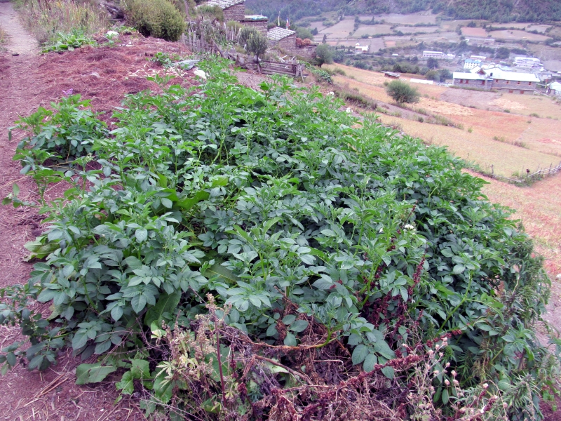
Иногда нам удавалось рассмотреть приоткрывающееся великолепие... одним глазком.
А дальше, идя по тропе, видели искрящийся изумрудный глаз в долине. Мы смотрели на него, а он в небо.
До Браги было 2 дороги: вдоль реки по долине и по склону на высоте 3600-3700 м. Мы подошли к стене Мани и взглянули вверх. В путеводителе этот отрезок описан очень ярко. Мол, вы будете думать, какого черта я иду здесь, бесконечно вверх, с таким уклоном?
Мы остановились передохнуть перед этим значительным прыжком, достали термос, оглянулись назад и остолбенели. Перед нами, освобождаясь от завесы облаков, возвышалась невероятных размеров белоснежная махина!! Вот это да! Вот это, черт побери, Гималаи!
На фото она не выглядела такой большой, поэтому оставалось только лицезреть, насыщаться той энергией, которая исходила от Аннапурны II!
Мы забыли про чай и отдых и поскакали вверх, наслаждаться открывшимися видами!
У Лёши в колонке играла непальская фестивальная музыка и один из портеров очень заулыбался и стал подпевать, а потом сказал своей “госпоже” с гордостью:
- это наша национальная музыка!
- так может ты хочешь пойти с ними? - отшутилась она в ответ
Кстати, портеры не шли обычной дорогой, они все время срезали скороченными путями, еще с более крутым уклоном и сыпухой под ногами. Шли в 2 раза быстрее и в 3, а то и в 4 раза были нагружены больше, чем мы. И при том, далеко не все из них были обуты в закрытую или удобную обувь. У кого-то были шлепки, у кого-то кеды.
Моя голова потихоньку стала приобретать свойства гелевого шарика, я положила под язык глицина и смирно топала вперед.
У Ghyaru встречал бычара, которого я сначала приняла за муляж, настолько он был неподвижен и подобен экспонату в музее природы.
Я не дыша, прокралась поблизости от его внушающих благоговейный страх рогов и поднялась на смотровую площадку.
Вот она награда. Не надо больше слов!
Ghyaru - типичная деревушка, что называется с традиционным укладом жизни, окруженная полями, засеянными ячменем и гречихой. Со стороны выглядит очень живописно.
От Ghyaru до Ngawal 2-2.5 часа ходу, идем не спеша, наслаждаясь.
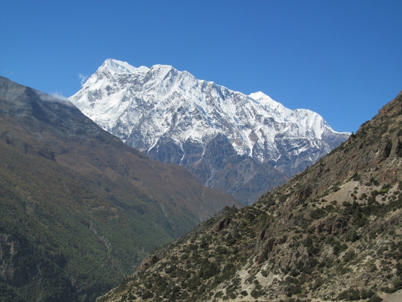
На пути встречаются многочисленные камни мани
В Humde есть аэродром, надеюсь он нам не пригодится, вспоминая про свои опасения насчет горняшки.
А за новым поворотом - другая природа, другая планета, что-то, чего ты еще не знал и не видел и это невероятно трогает.
Показался Ngawal. Издалека, не будь флажков и цветастых лоджей, дома непальцев хорошо закамуфлированы под горы, слабо различимы и напоминают гнезда ласточек.
Мы пообедали в ближайшем лодже и от Ngawal дорога снова расходилась двумя путями (через буддистскую школу, монастырь и аутентичную заброшенную деревушку (около 3.5 часов до Браги) и по нижнему непримечательному пути (около 2.5 часов)).
Вообще, лучше выбирать более длинный и сложный путь, он всегда будет более запоминающимся и великолепным, как бы тяжело вам не было. Это стоит того!
Проходя через центр Ngawal местная женщина, стирающая тряпку в какой-то канаве, прокричала Photo! Да, а какой еще заработок с треккеров у женщин в этом поселке: ночлег, еда и фото.
Сейчас я не кусаю локти, что не сделала фото. Просто пока не научилась “нацеливаться” на людей в упор или платить им за это деньги.
Предстоял еще один подъем, после которого шел постепенный спуск к месту ночлега в Браге.
На одном из редких плоских участков находилось футбольное поле, где ребята гоняли мяч. На 3700 м! Вы можете себе это представить?!
Я присела возле ступы, спрятавшись от ветра и наблюдала за их игрой. Вспомнилась та же самая сцена из фильма “Невероятная жизнь Уолтера Митти” и как сентиментальная персона, я снова разревелась. Фильм стоящий, если не смотрели - обязательно посмотрите! Если вы не путешествуете или путешествуете мало, вы обязательно пересмотрите приоритеты в пользу открытия новых мест для себя.
Ничего не хочу сказать, просто вырезка из путеводителя:
“Непал - удивительная страна, где легенды и сказки соединяются с реальностью. Здесь издавна жили йогины и отшельники. Великие мастера буддизма и индуизма… “Кто хоть раз увидел Гималаи, тот очистил свою карму” - эти слова из индийского эпоса не пустой звук. Путешествие по святым местам действительно дарует очищение”.
Пройдя немного, мы вышли к буддисткой школе, окна которой открывались на Аннапурну III (7 555 м). Вот повезло детям!
Внутри никого не оказалось, была кромешная тишина, только ветер таинственно гулял и подхватывал занавеси дверных проемов.
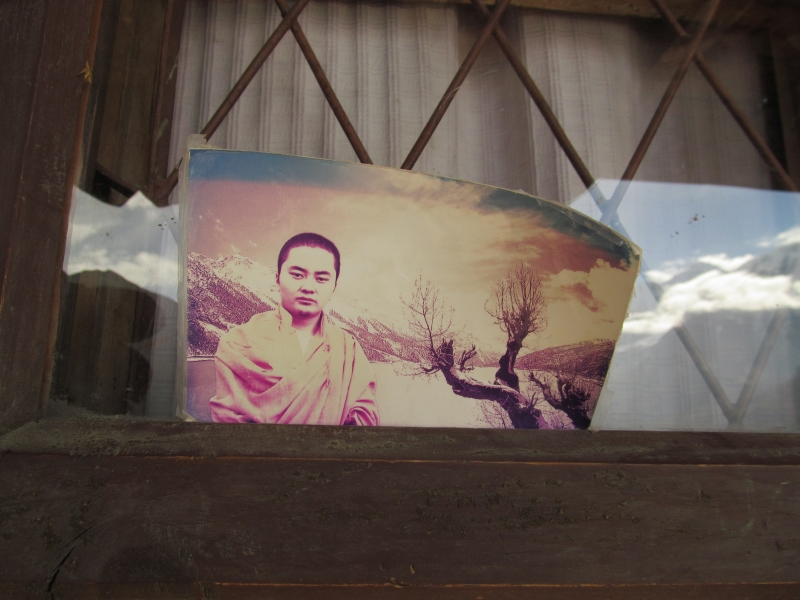
Мы осмотрелись. Из Минска детям привезли фломастеры, карандаши, неважно каким, но почему-то захотели оставить здесь. Лёша принялся писать записку.
Кошечку, приютившуюся рядом, я приняла за будущего снежного барса Ведь главное - это воображение
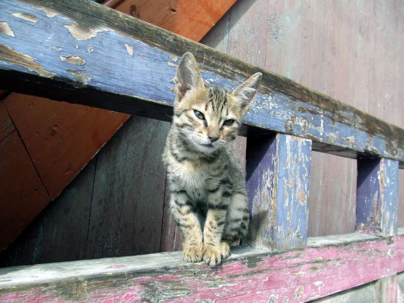
Как бы умиротворенно здесь не ощущалось, но пора было продолжать путь.
Тропинка была крутая и пыльная, вихри от ветра и шагов поднимались аж до пупа.
Стволам деревьев тоже не поздоровилось
После спуска встретили тех самых школьников. Выглядели они как бригада Робин Гуда! За время треккинга ты уже привык выражать приветствие Namaste, а тут эти разбойники тебе говорят Hi или Hello, ты им в ответ Namaste и они заливаются насмешливым детским хохотом. И думаешь, а что ты сделал не так В общем, буддистские школьники представлялись немного иначе: все такие смиренные с кроткой улыбкой. Но дети, они и в Гималаях дети!
Мы продолжали спускаться в долину. Виды захватывали, каких тут только форм рельефа нет. Изучай геологию с морфологией - не хочу!
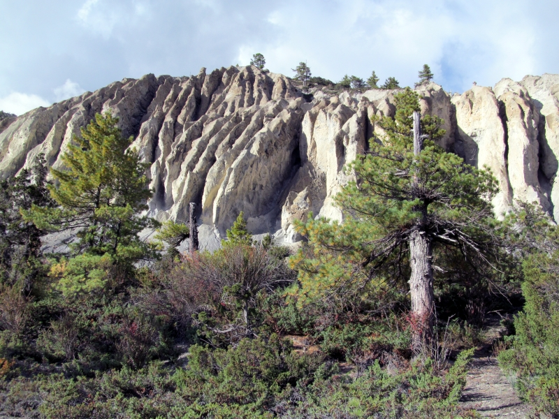
До Браги оставалось идти, всего - ничего, но усталость ощущалась, я напевала себе под нос какую-то мелодию, чтобы отвлечься. Вечерело.
Смотрела на горные вершины и думала, ну ничего себе, это еще 3 тыс. метров лезть, чтобы оказаться на самом-самом верху. А там пурга, метель и холод. Брр!
Вообще, мы раздумывали идти нам все-таки до Мананга, он чуть выше расположен (на 3 500 м), или заночевать в Браге. И в первом же лодже с балкона нам весело махал наш знакомый француз, который предположил, что мы из КГБ и следим за ним, настолько часто мы пересекались за время пройденного трека.
Еще двое ребят очень рекомендовали этот лодж (New Yak), сообщили, что в Мананге сегодня все лоджи переполнены и интернет очень дорогой, да и здесь душ есть горячий, правда only 10 minutes (и за этим действительно очень следит хозяйка, как было проверено позже).
Нам показали комнату, она была с большой кроватью, большими панорамными окнами и с персональным туалетом и в целом выглядела очень уютно. Хозяин сказал, что если будем у них завтракать и ужинать, отдаст подешевле. Берем!
Но до ужина дело не дошло, Лёша принял горизонтальное положение и больше не встал, отголоски горняшки дали о себе знать.
4 октября. День шестой.
Маршрут и высота (радиалка): Bhraga (3 470 м) - Ice Lake (~4 600 м) - Bhraga (3 470 м)
Пройденные км и время: ~ 8 км, 08.30-16.30
В Мананге или Браге советуют проводить несколько акклиматизационных дней. Отсюда есть несколько радиальных маршрутов:
Ice Lake (~ 4600 м),
Milarepa’s Cave (~ 4000 м),
100 Rupee monk in Praken Gompa ( 3495 м) и др.
Отсюда же стартует трек к озеру Тиличо (~ 5000 м) - одному из самых высокогорных озер мира.
Мы выбрали трек к Айс Лейку, хотя очень хотелось бы забраться к Тиличо, но это требовало еще 3 дополнительных дней, которых у нас, увы, не было.
Позавтракав, мы отправились на трек.
На глаза уже стали попадаться яки. Рога у них, конечно, знатные.
Подъем предстоял суровый и крутой под жарким октябрьским солнцем, которое здесь, в Гималаях, на 3 000-5 000 м ближе, чем у нас
Чем выше мы поднимались, тем невообразимо чудеснее выглядела Брага и окружающее пространство: змеевидная речная нить в долине, обступающие ее рифленые холмы и заснеженные гребни. Вот это красота! Гипнотизирует!
На импровизированной скамейке из камней встретили парня из Германии, который поднимался из соседней деревушки. Он уже несколько недель провел в Покхаре и вот сейчас приехал в горы, преподает английский в местной школе и конечно, в очуменном восторге от Непала и его жителей.
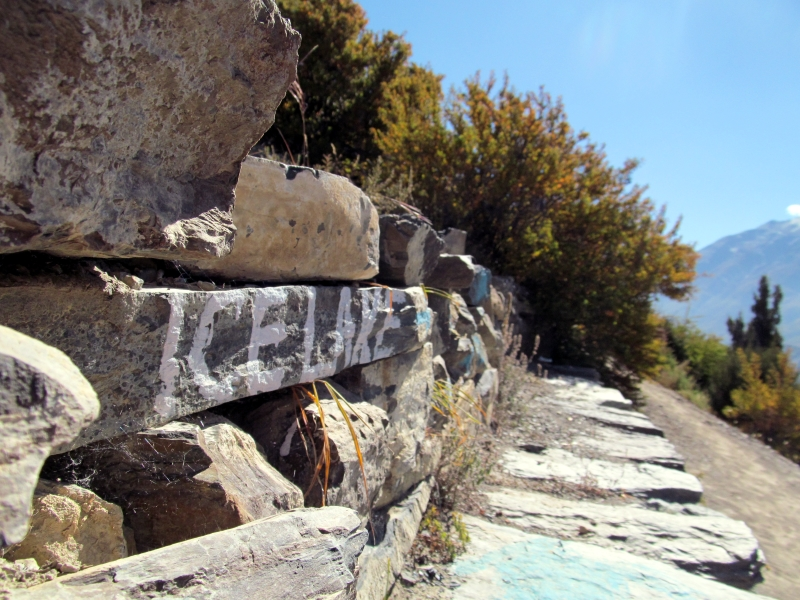
Позже нас обогнала американка с портером, который шел, видимо, с ней за компанию. Она - крепкая девушка в майке и коротких шортах, блондинка, с шикарной улыбкой и широким шагом. Летела, как орел, вверх и вперед.
Дорога до Айс Лейка представляла собой чередование почти отвесных подъемов и обширных полей после них и ты постоянно был в предвкушении, что именно после Этого подъема тебе откроется волшебной красоты горное озеро, в котором, как в зеркале живописно отражаются горные хребты. Но как говорится: скоро сказка сказывается, да не скоро дело делается.
Многим было тяжело, особенно китайской паре. Мы присели перекусить, неподалеку присел китаец, он спросил нас:
- далеко ли отсюда еще?
- Лёша ответил: около 400 м
- он обрадовался
- Лёша догадался, что его не так поняли и поправился “вверх!”
На что китаец издал очень мучительный продолжительный стон и уткнулся лицом в колени.
Нас тоже накрывало легкой дремотой, тяжестью во всем теле, особенно в голове. Все сознание постепенно окутывало какое-то внутреннее газообразное вещество, которое плющило мозги.
Но таблички с названием Айс Лейк манили вперед...
На фотоснимках мы улыбались
Некоторые группы уже спускались и были восторженны, они взахлеб делились впечатлениями, они были вдохновлены увиденным, да просто каждым шагом на этом треке. Они повторяли, как заведенные: it’s amazing, beautiful! everything! every step of this trail is just amazing!
А мы смотрели на них и не понимали, что с нами не так и почему мы еще не дошли до Айс Лейка, может во всем виноват милдронат, который мы приняли перед сегодняшним треккингом?! Что-то больно депрессивное состояние на пути к прекрасному…
Нет, находились, конечно, вещи, которые не оставляли нас равнодушными и даже очень радовали, например, склоны с симпатичными лишайниками.
Лёше было похуже моего и после очередного подъема он разлегся прямо посреди ячьих какашек и, как ни странно, был доволен.
Ноги не слушались, голова не работала.
Во время движения мы походили на заключенных концлагеря.
На завершающем подъеме навстречу уже сбегала жизнерадостная американка, она словно спартанка, всё ей будто было нипочем: ни симптомы горняшки, ни поднявшийся ветер. Она легка и весела.
А за нами плелась китаянка, оставшаяся в одиночестве, ее друг не осилил бесконечные подъемы и развернулся в обратный путь. Она кряхтела и восклицала, но настойчиво шла, опираясь на треккинговые палки, как немощный старик.
В общем, картина довольно веселая, если посмотреть со стороны
Подъем завершен, теперь горизонтально шагаем по тропке, которая огибает гору волною. Подходим к долгожданной цели - нашей акклиматизационной точке на сегодняшний день.
Я шла позади Лёши, иду, смотрю он сел и сидит в такой задумчивости.
Ах, вот оно - озеро!
Думаю громко вслух: Вот это непальцы шутники! Айс Лейк! Никакой этот Лейк не Айс, как в прямом, так и в переносном смысле. Если с первым еще ладно, то уж от второго я такого не ожидала!
И может верна та фраза: “Разочаровались? А нечего было очаровываться!” Нечего было мне рисовать невесть что в своем воображении. Это 4600 м и здесь всё по-высотному сурово и скромно!
Но Лёша подсказывает, что это еще не совсем тот Айс Лейк, до него еще метров 200.
О, так значит я рано расстроилась?!
Идем дальше, не так быстро, как хотелось бы, т.к. голова и ноги перестали между собой координироваться. Сейчас мы уже похожи на зомби.
Пейзаж совсем безжизненный
А позади - очень красиво, жаль только, что рассудок замутнен и не дает разглядеть четко всю красоту, распахивающуюся на этой высоте!
Пробуем сделать фотографии “в полёте”. Ставим фотоаппарат на серию кадров и прыгаем-прыгаем-прыгаем... Ни одного путного кадра не вышло, зато получили сногсшибательное головокружение и шум в ушах как от звона православных колоколов.
Настоящий, тот самый Айс Лейк, покрасивше будет. В октябре-ноябре озеро, как правило, не покрыто льдом. Самый настоящий Айс Лейк можно увидеть в январе-марте.
Ветер стал усиливаться, как и всегда после полудня, посему мы направились в Брагу.
Спуск порою бывает тяжелее подъема: ноги более напряжены, только успевай ступни переставлять, да наклонять их под правильным углом, аж коленки иногда трясутся; видно, как далеко будешь падать в случае неосторожного перемещения
Спустились уже на высоту 3 800, а ясности нет. Пьем чай и думаем, что экстрим план (за 13 дней пройти кольцо Аннапурны) под угрозой. Вызов высоте невозможно бросить. Она ответит гораздо сильнее и жестче.
Задумчивы. Главное - это теперь не в сроки уложиться, а перевалить через Торонг Ла. Бредем.
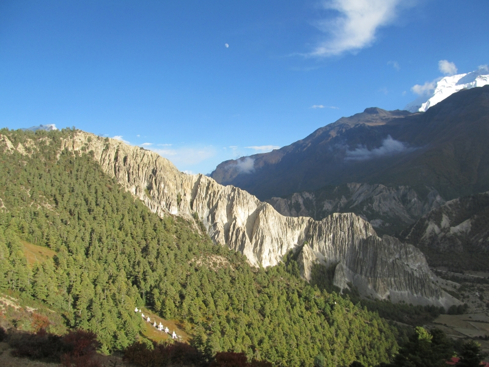
Сегодня моя очередь валяться в горизонтальном положении. Боль не унимается, хочется вырезать очаг и выбросить его вон. Выпиваю аспирин и ожидаю эффект. Лёша принимает душ и делает заказ на ужин.
Через час аспирин возымел действие, я воспряла духом. Мы поужинали в жаркой общей комнате, наполненной щебечущими треккерами с разных стран земного шара. Кто-то обсуждал планы на завтрашний день, кто-то впечатления от дня сегодняшнего, кто-то рассматривал фотографии. Было очень уютно и хорошо.
5 октября. День седьмой.
Маршрут и высота: Bhraga (3 470 м) - Manang - Gunsang (~ 3 900 м)
Пройденные км и время: ~ 6 км, 08.30-14.30
Утром мы проснулись, в окно до пола заливался яркий свет, сегодня предстоял подъем на 4 000 м на ночлег. На завтраке встретили француза, они отправлялись сегодня к Тиличо лейк. Было грустно за нас, и страшно и радостно за ребят.
Собрали свою поклажу и двинулись в путь. Дорога от Браги до Мананга - прогулка по плошмяку не более получаса. Погода отличная, небо ясное, кто-то еще принимает водные процедуры, кто-то уверенно шагает в сторону подъема к Айс Лейку.
Дорога из широкой прямой превращается в витиеватую и скрытную, но приводит путников в Мананг.
В Мананге треккеры останавливаются чаще. Этому способствует более развитая инфраструктура в сравнении с очень многими поселениями на треке вокруг Аннапурны. Здесь ты выбираешь, как дальше двигаться к Джомсому: через Тиличо лейк или Торонг Ла. Здесь можно докупить недостающую снарягу и экипировку в китайском исполнении. Здесь можно отведать бесподобных пекарских изделий. Здесь чувствуется дух цивилизации в виде Проектор холла и таких фильмов как: 7 лет в Тибете, В диких условиях…
Мы уже на несколько дней оставили родню без каких-либо весточек. А отправляясь в такую неблагополучную страну (по мнению многих знакомых) такого допускать никак нельзя. Поэтому в Мананге мы задержались: во-первых, чтобы отправить почтового электронного голубя и во-вторых, обзавестись треккинговыми палками, ну и конечно же купить свежайших булочек с корицей. Ммм…
Лёша источает счастье, добрался до ноутбука!
В одном из магазинчиков выбрали треккинговые палки, незамысловатые и всего 5$ за 2 штуки. Хозяин помог и был весьма доброжелателен.
_files/IMG_7503.JPG)
Многие в Мананге остаются на пару дней для акклиматизации, делая радиальные вылазки. А мы планируем добраться сегодня до Як Кхарки (около 4050 м).
Дорога не сложна, иди себе по тропе и иди. Отдаляясь от горных поселений всё дальше, они становятся всё менее различимы в окружающем пространстве. Лишь молитвенные флаги, как антенны, над домами выдают живые души среди гималайских громадин.
От семитысячника Гангапурны лениво спускается вниз его ледниковый язык, сформировав доступное для масс молочно-бирюзового цвета озеро. Полюбовались им лишь издали.
В одной деревушке женщина выставила на продажу свои поделки: бусы, серьги, браслеты и т.п. Являясь любительницей всякого такого, не смогла не притормозить и не поразглядывать, даже пускай из праздного любопытства. Она же со своей стороны хотела что-нибудь продать. Но я показала ей браслет, купленный еще в Братанге, она заинтересовалась, у кого и с разочарованным видом отпустила нас в дальнейший путь.
Немного пройдя от деревни вперед, уже на дороге, повстречался странного вида старик, тоже торговавший поделками. Меня поразил его вид, он был похож на трухлявый пень: половины зубов не хватало, у него были руки-крюки в прямом смысл слова и еще косоглазие. Знаете, но он улыбался и смотрел на нас добрым взглядом. Вот хотелось его взять и обнять, крепко-крепко. Но люди ведь не всегда, а даже очень редко, делают то, что хотят. Есть всяческие сдерживающие факторы, увы... Мы потопали дальше, даже ничего не купив.
фото не моя, "украдена" из этого прекраснейшего отчета По дороге вокруг Аннапурны. Взгляд на жизнь и на себя с изнанки. Один глоток свободы.
Мы шли, дорога казалась прогулкой. Ты уже приближаешься к 4 000 м, но здесь физически это мало ощущается.
Решили сделать привал, подкрепиться ништяками. А отойдя от старика, я всё оборачивалась и вот сейчас, сидела и смотрела в его сторону. Такое бывает, когда ты хотел что-то сделать и не сделал. Хотел помочь, но прошел мимо. Когда тебя гложут сомнения, а как лучше стоило поступить, как будет правильнее и что подумают другие. И вот сейчас чесалась подкорка мозга от сомнений.
Беру деньги и бегу со всех ног снова к старику!!! А он уже почти всё собрал.
Начинаю выбирать, интересоваться. Общаться получается с трудом. Пытаюсь выяснить тайный смысл символов на кулончиках, беру штуки 2 или 3. Даю ему деньги, он их в зубы, ищет пакетик, чтобы все сложить. Меня аж переполняет возбуждение и радость от того, что вернулась. А глаза у него светятся добротой и улыбается он своей кривой улыбкой, говорю спасибо, прощаюсь и возвращаюсь к Лёше с безделушками, которые носить вряд ли будем, но счастливая-присчастливая! Действуем, товарищи, действуем!
Дорога поворачивалась спиной, пряталась меж горных хребтов, к Аннапурне. Самые захватывающие виды теперь эстафетой передавались к тем, кто направился к Тиличо.
Не то, чтобы тем, кто прямиком идет к Торонг Ла, сейчас вообще не на что смотреть, но заснеженных пиков во всей красе станет поменьше.
Гансанг стоял прямо на дороге. Синхронно из лоджей вышли хозяйки, заприметив нас еще вдалеке и выжидали, пока мы приблизимся.
Мы выбрали лоджу для ланча, где улыбались как-то искренне, по-родному. Здесь заправляли всем три женщины, 2 француженки и 1 местная. Тут мы ощутили на себе смесь непальского гостеприимства с привкусом европейского сервиса. Француженка мастерски предложила облепиховый напиток, дала рекламную брошюру, как никто другой ранее рассказала про местные блюда, предложила на выбор место для обеда (на крыше или в помещении). В общем, восторг!
Чудо-сооружение
Впечатлившись сервисом, решено было остановиться здесь и на ночлег. Комнатка светлая и с прекрасным видом, но вся лоджа без электричества и душа. Ну и ладно, на 4000м не очень то и хотелось)
Заселившись, нас не отпускала мысль о мясе. Больше недели и ни кусочка. А несем за пазухой аж 3 палки колбасы: еврейскую, брауншвейгскую и салями
Пора избавляться от лишнего груза! Лёшу переполняет радость Меня, признаться тоже. Вегетарианцам стать бы я не смогла.
Ну и после обеда нет более правильного выбора, чем сон.
К вечеру вышли оглядеться, забраться повыше для акклиматизации. Идти вверх можно, наверное, долго. Тропа есть и она очень манит.
_files/IMG_7559.JPG)
Внезапно появилось стадо, напоминающее с дальнего расстояния, косуль. Они были стремительны, непостоянны, пугливы, своевольны. Стадо было многочисленное. Я наблюдала за ним заворожено, хотелось приблизиться, но я не орел и оставалось ловить их только на матрицу фотоаппарата.
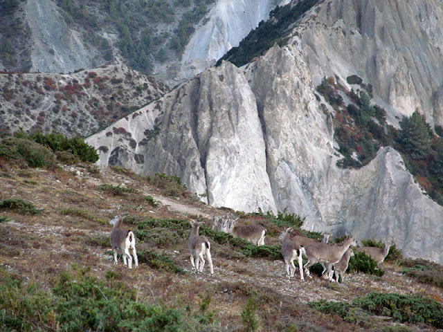
Вершина вероятно Гангапурны сияла в позолоте заходящего солнца Исчезали последние десятки минут светового дня. Мы начали спуск, чтобы не остаться в кромешной тьме где-нибудь на склоне в окружении чернопопых “косуль”.
_files/IMG_7571.JPG)
По возвращении мы поинтересовались, не в курсе ли хозяйки, что за “косули” бегают здесь. Француженка помоложе ответила, что это blue sheep, на что я подумала, что она чего-то вкурила, т.к. ни по цвету, ни по форме они не были на них похожи. Но оказалось, что так оно и есть, второе название на хинди этих блу шипов - бхарал.
На ужине обнаружилась подзорная труба, Лёша с азартным любопытством ребенка взял ее и мы взобрались на крышу: вдохнуть свежей прохлады, замереть от величественного безмолвия гор и почувствовать внутреннюю тишину и спокойствие.
6 октября. День восьмой.
Маршрут и высота: Gunsang (~ 3 900 м) - Yak Kharka - Leddar - Base Camp (4 450 м)
Пройденные км и время: ~ 12.5 км, 09.00-16.00
Утро началось с вкуснейшей, домашнего приготовления, картошки. Ну нет ничего вкуснее! Вообще, в этом лодже всё очень вкусно готовили! Chullu west hotel можно рекомендовать как прекрасное место для уединения.
Мы не знали, куда точно сегодня попадем. Решили смотреть по самочувствию. По треккинг тайму от Гансанга до Базового лагеря 4.5 часа ходу. Немного. Идем.
Солнце светило во всю силу. Чем-то погода напоминала наши осенние деньки, когда вокруг всё, как в калейдоскопе: пестрое, неповторимое, насыщенное. А в воздухе такая чистота, так хочется глубоко дышать, смакуя каждое мгновение происходящего.
_files/IMG_7619.JPG)
_files/IMG_7620.JPG)
Делали небольшие перекусы, миновали Як Кхарку, там же встретили десятку бодрых велосипедистов. Даже в Непале на треке на них нет такой стопорной реакции, как у нас зимой. Всё самой собой разумеющееся и из ряда вон не выходящее. Каждый волен делать, что хочет.
Мне шлось легко, я была занята щелканьем всего и вся.
Лёша же был немного в тумане, но мы продолжали идти, делая многочисленные остановки.
Не заставила себя долго ждать деревушка Леддар, состоящая из нескольких лодж, на высоте 4230-4250 м.
В ней мы повстречали знакомого голландца Ника, увлеченного написанием дневника на застекленной веранде, понаблюдали за нелегким бытом местных. Наконец-то я сфотографировала чумазых детей за мыльные пузыри или все-таки просто так…
Ник оставался в Леддаре на ночлег, он теперь шел в компании новой знакомой, а ей было нелегко, поэтому преодолевали они понемногу, но довольно уверенно.
А мы подумали, что стоит дойти до Базового лагеря, т.к. времени предостаточно, да и не на такой высоте, у Айс Лейка,уже бывали. Ничего не предвещало беды.
Чем ближе к Торонг Пхеди, тем дорога всё больше запрятывалась в ущелье, местами шла по сыпухе, была узковата и опасна.
_files/IMG_7717.JPG)
На подходе к Торонг Пхеди дорогу перебегали блу шипы на неожиданно близком расстоянии!
Базовый лагерь являет собой отправную точку для большинства стартующих на перевал, кто-то ночует в Хай кемпе. Их отделяет 400 м набора высоты и примерно час пути в зависимости от подготовки, т.к. подъем довольно крут.
Когда еще не видел, но в ожидании и предвкушении, в голове прокручиваешь, как он будет выглядеть, как сможешь преодолеть трудности на пути к нему, каким бесценным будет этот опыт.
Мы наблюдали как спускалась бодрая группа пенсионеров в ярких одеждах с яркими улыбками от Хай Кемпа. Они, видимо, уже сбегали на акклиматизацию, чтобы завтра без последствий взобраться к Торонг Ла, заветной цели большинства на этом треке.
Немного завидовали, а Лёше было совсем неладно. Отнесли вещи в каменную обитель на сегодняшнюю ночь. Лёша силился улыбаться, но в глазах прочитывалось сомнение.
Верным решением было подкрепиться (на часах около 17.00), т.к. после завтрака ничего горячего не ели.
Столовая большая, светлая, с изюминками, ее хочется рассматривать, все мелочи и атрибуты непальского быта. За стойкой девушка европейской внешности, с виду уставшая, отрешенная. На макбуке управляющая той самой музыкой в тему и отпускающая выпечку желающим. Что она здесь забыла, как ей здесь живется… загадка. У каждого своя жизнь, свои ценности.
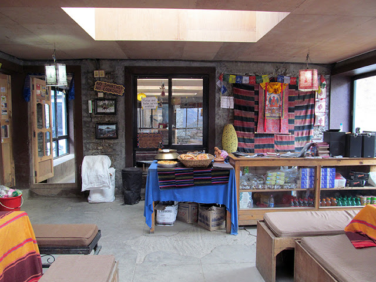
Занимаем место возле электропечки, делаем заказ на сегодня и на завтрашнее утро.
На высоте полезно есть чеснок, где-то прочитала я. Берем чесночный суп и спагетти
Глядя на принесенный чесночный суп делаем вывод, что непальцы могут сделать суп вероятно даже из камня т.к. на вкус он ну совсем никакой.
После обеда к нам подходит знакомый байкер из Австрии, обмениваемся впечатлениями и планами на день грядущий. Потом появляется француз, который уже “сбегал” к Тиличо, с ним мы последний раз виделись в Браге. За наш стол подсаживается развеселая компания китайцев. Они несказанно взбудоражены, беседа с ними затягивает. Оказывается они побывали в Тибете перед тем, как отправиться на трек в Непал. И 4 дня назад были в Бесисахаре. На минуточку, это в 2 раза быстрее нашего темпа. Чувствуют себя отлично, т.к. в Тибете на 5 тыс. уже акклиматизировались и отмучили своё в бессонных болезненных ночах.
Договариваемся, что завтра в 5.00 встретимся здесь и пойдем вместе.
А Лёша безучастен. И игрой он не смог отвлечься. Я не представляла, что он чувствует, т.к. была в порядке. Он отправился спать, а я осталась подзарядить батарейки и пересмотреть фото, ну и просто побыть в компании бородатых единомышленников, послушать беседы, понаблюдать за треккерами и их портерами.
Когда стемнело, тоже отправилась в комнату. Лёша не спал. Не заснул он и во всю оставшуюся ночь. Ворочался, что заведенный, горел, сопел, кряхтел и в 2 ночи прошептал:
- извини, Маша, но сегодня я не смогу пойти к Торонг Ла...
Калейдоскоп ощущений (Болезнь чересчур самоуверенных)
"Я ведь не дурак и знал, куда направляюсь. Раньше мы с Машей не стояли на высоте даже вдвое меньшей нашей высшей точки (5416м). Поэтому был продуман план, в котором - следование советам фанатичного бельгийского любителя Непала: проход по, так называемому, high trail, с набором высоты свыше 3900м и последующим спуском до 3450м в тот же день, а также 2 ночи акклиматизации на этой высоте (необходимый минимум). За 3 недели до поездки я пробежал свой первый полумарафон, за неделю отъездил свою самую продолжительную 30часовую ПГ в Полесье. Да и вообще сезон был достаточно спортивный, возможно, даже самый спортивный, учитывая 150км по горно-холмистой Турции в мае того года. Короче, я был в форме быка со встроенным мотором, смотрящего на красную тряпку тореадора.
К слову говоря, вся эта предварительная подготовка помогла мне испытать минимум физических сложностей, но горная болезнь оказалась зверем совсем другого вида, и повлиять на неё заблаговременно вряд ли возможно. Но обо всём по порядку.
Углубляясь Немного в теорию, на горную болезнь влияет не только сама высота над уровнем моря. Гималаи, Анды, Кавказ, Камчатка - на каждом горном участке нашей планеты есть свои пограничные высоты, ниже которых человек может ощущать себя вполне сносно, а выше - “словить” первые признаки горной болезни. В Гималаях эта высота - около 3500м. Многочисленные рекомендации говорят о том, что:
1) по достижении 3500м нужно провести минимум пару ночей здесь, при этом днём можно делать вылазки и на бОльшие высоты
2) в последующие дни не стоит набирать больше 400-600м за сутки, даже если физически с этим нет никаких проблем
Первое знакомство со зверем состоялось в Braka на высоте 3400м после того самого high trail, возвращаясь из Ngawal и впервые взятыми 3900м. Знакомство было весьма неожиданным и настигло меня в горизонтальном положении. Дневные головные боли уже прошли, и ничего, как говорится, не предвещало. А у меня всё поплыло так, будто лёг в водяную кровать. Ужин, душ - всё ушло на дальний план, хотелось или зацепиться за что-то устойчивое в этом состоянии, или уйти в небытие. Сразу я смог зацепиться за беспокойное лицо Маши, которая лежала прямо напротив и смотрела на меня, а потом меня забрал Морфей. Он в этом деле спаситель, и, проснувшись через час, я был готов вернуться в положение вертикальное. Впрочем, ужином в тот день это не закончилось ни для меня, ни для переживающей за меня Машей, и второй “провал” закончился уже утром.
На следующий день мы уже оба лицезрели Второе пришествие, хотя горизонтальному положению не предавались, пока не вернулись в свое временное жилище. Это было во время радиалки с 3400м до безумных 4620м к Ice Lake. Пускай мы и вышли туда не самым ранним утром, но спускались мы оттуда точно самыми последними, отчего-то не такие радостные, как путешественники перед нами. Голова напоминала рок-концерт. Настоящий такой, с громким звуком, дымом на сцене. Ближе к высшей точке наступала кульминация, когда группу зовут на бис, она исполняет хит, горят фейерверки, летит мишура, толпа в экстазе, голова готова взорваться. А потом умиротворение, обратный путь, будто накормленный зомби идёт с вечеринки. У мутной головы осталась всего одна задача - аккуратно переставлять ноги.
Третий уровень ощущений достался только мне. Дело было близко к нашей когда-то промежуточной, а на тот момент уже скорее основной цели - перевалу Торонг Ла. Последняя запланированная ночёвка перед подъёмом в Торонг Педи на высоте 4450м. Место это специфично как минимум тем, что это не деревня, а поселение, построенное специально для путешественников, и все здесь говорят на одну тему. 99% людей завтра отсюда пойдут вверх. Сюда я уже пришёл в состоянии зомби, но теплился надеждой, что Морфей и здесь поможет. Скушал адский чесночный суп и пошёл в холодную комнату, на часах ещё не было 17, но ожидался ранний подъём, поэтому всё это имело смысл. Маша присоединилась довольно скоро, если считать обычным земным временем, но моё время в тот период шло уже по каким-то другим очень медленным законам. Спектр ощущений был весьма широк: головная боль и головокружение, лёгкая тошнота, нарушенное терморегулирование, дрожь, кости ломило, а позы менялись каждые полминуты. О сне не могло быть и речи, для активных действий тоже не было ни сил, ни сосредоточенности и точности действий.
Ближе к утру было принято разворачиваться и немного сбросить высоту, к этому времени, мне, кажется, удалось вздремнуть отрывками на какое-то время, но положение это не спасло. Маша отменила завтрак, мы сбросили немного мало нужного груза и побрели с частыми остановками вниз. Самым удивительным было то, что каких-то 200м снижения оказалось достаточным, чтобы снова устойчиво стоять на ногах.
И хотя мы шли по грани потока рекомендаций и предостережений по акклиматизации, ниже которой было только “авось” и “вдруг пронесёт”, необходимый минимум из них мы выполнили. Как показала практика, иногда этого недостаточно, и наличие отходного пути и свежей головы боевого напарника оказывается как нельзя кстати."
7 октября. День девятый.
Маршрут и высота: Base Camp (4 450 м) - Leddar (~4200 м)
Пройденные км и время: ~ 4 км, 06.00-08.30
Хорошо, подумала я. Надо спускаться, ведь нет лучшего средства от горняшки, чем спуск на высоту, на которой было комфортно.
С виноватым понурым лицом вышла во двор. Было прохладно, ночная мгла уже почти рассеялась. Другие комнаты светились, в них дружно и радостно что-то обсуждали, готовились к подъему.
Я отменила завтрак, оставила большой пакет конфет, орехов на столе в столовой, как избавление от ненужного груза.
Встретила француза и австрийца, они чувствовали себя отменно, их штырило от энергии. Они были готовы! Я что-то им промямлила ввиду плохого знания языка, улыбнулась через силу.
Признаться честно, было грустно: ты поджимаешь губы, пожимаешь плечи, грустишь глазами, провожая тех, кто отправляется вперед по змеевидной тропе вверх, к такой близкой и далекой теперь уже цели.
А получится ли вообще? Или так и останется не преодоленной высота в 5 416 м, доступная для сотен пенсионеров со всех уголков света?
Я не злилась на сложившуюся ситуацию, может быть не в полной мере понимала Лёшу, но хотела, чтобы с ним всё было хорошо и вернулась бы без Торонг Ла в кармане, если бы так было надо. Пока же от цели мы не отступались, только хотели освежить Лёшину голову и поправить общее состояние.
Мы ступили на проторенную вчерашним днем дорожку и осторожно побрели, скидывая неторопливо метр за метром на пути к освобождению от боли и страдания.
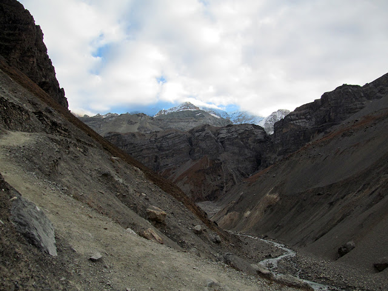
Я почти не фотографировала. Хотя паломническую вереницу из десятков треккеров и портеров стоило заснять. Очень многие из них останавливались перекинуться с нами парой слов, спросить, что да как, пожелать удачи и мы им в ответ. Некоторые предполагали, чтобы мы следуем из Муктинатха. Но нет. Встретили и Ника, он был бодр, улыбчив и немного обеспокоен, узнав, что нам приходиться спускаться. Никто не знал наверняка, как поведет себя их организм, даст ли он добро на высоту.
Вот мы у Леддара. И вроде Лёше полегчало. Позавтракаем и поглядим, как будет дальше, стоит ли сбрасывать высоту дальше.
Картошка и лимонный чай - самый частый заказ и беспроигрышный. В окнах лоджа всё маячат фигуры треккеров, устремляющихся в Торонг Пхеди или Хай Кемп. Эх…
Ну что, по самочувствию неплохо. Бронируем комнату. Интернет и душ здесь платный и цены кусачие. И вид из окна не живописен.
Решаем вздремнуть, набраться сил. Морфей берет к себе надолго. Уже около трех пополудни. Надо думать, как быть дальше. Пока же обедаем пакодой, наблюдаем за местным жителем, выгружающим пыльные мешки на стол напротив. Вот живут и не парятся. Гигиена, чистота, порядок, кто и для кого это вообще выдумал?
В запасе еще пару световых часов, надо прогуляться, проветрить мысли, чтобы принять решение.
_files/IMG_7764.JPG)
Компанию нам составляют яки, при том интереса к нам никакого не проявляя. Да и мы их заметили лишь благодаря хрюку, которые они издавали, как свиньи или наши лесные кабаны
Вот и заблестала своей вершиной Аннапурна III или Гангапурна. Как бы хотелось подобраться к ним поближе, быть одним из тех смельчаков, кто рискует жизнью, подвергает себя опасности ради такого эфемерного чувства свободы, а может ими движут другие цели. У каждого они свои, своя жизнь, свое удовольствие. Но хотелось бы!
Лёша видно не до конца оклемался, что решил сзаду подойти и заснять медитативно жующего травку яка, прямо как в одной из передач Animal Planet. Но быку это не понравилось. Процесс был нарушен и он кааак даст стремительным выпадом в сторону “оператора” рогами вперед, что я аж рот от изумления открыть не успела, только сердце в этот момент замерло. И потом я уже старалась идти аккурат поодаль от всех ячьих особей, только бы не вызвать их негодования.
Столовая лоджа к вечеру набилась треккерами, на больших высотах здесь не так уютно. Люди немного напряжены, осторожны. Ну и мы здесь ненадолго.
План действий определен: завтра глубокой ночью выдвигаемся на взятие Торонг Ла, конечный пункт - Муктинатх. Вариантов отступление нет и не может быть и так мы тут задержались.
8 октября. День десятый.
Маршрут и высота: Leddar (~4200 м) - High Camp (4 850 м) - Thorong pass (5 416 м) - Muktinath (3800 м)
Пройденные км и время: ~ 18 км, 02.30-17.00
Подъем в 2 часа, быстрые сборы, выход во тьму в 2.30.
По тропе идем в третий раз, уже можно с закрытыми глазами. Если выключить фонари, то зрачки глаз могут распознать контуры горных цепей, пики, ледники. Вокруг тишина и полнейшая монохромия.
Идти не страшно, наверное, опыт участия в ПГ сказывается. Но вот по подвесному мосту поджилки все-таки трясутся ступать. Но пути назад никак нет.
Налобные фонари добавляют давления в области висков. Снимаем и держим их в руках, освещая дорогу. Проходим мимо Tea house, откуда-то из глубины доносится приветливое Namaste. Хорошо, что здесь кто-то есть, а не только нависающие горные глыбы, без солнечной подсветки не вызывающие доверия. Позади примерно половина пути до Торонг Пхеди. Идем, ритмично дыша. Издалека выплывает что-то не очень похожее на человека… 4 часа утра. Бог ты мой, это всадник, по такой то узкой дороженьке! Скачет, улыбается и вновь Namaste
Восход не за горами и мы уже на подходе к базовому лагерю. Делаем “перекур” на чай и легкий завтрак.
Пока трапезничали я как всегда втыкала по сторонам. Любопытствовала. Людей было немного, все уже взбирались мелкими шагами к большому и такому желанному. Дремоту утренней столовой будоражили всхлипы и рыдания одной девушки. К нам подсела ее подруга и поинтересовалась, куда мы дальше следуем и можно ли с нами, т.к. ее напарнице не очень хорошо и дальше она двигаться не может… из-за страха. Иногда ее страдания были схожи с симптомами панической атаки. Порой она выдавала какой-то набор нечленораздельных слов, что она не хочет дальше и ей очень и очень страшно. В общем, ее оставили с портером спускаться вниз.
Лёша “одолжил” у нашей новой спутницы таблеточку диамокса, мы утеплились и вышли в морозный рассвет.
Тропа вела зигзагами, можно было впасть в медитацию, концентрируясь только на вдохе и выдохе.
Кому не особо принципиален был способ попадания на перевал, взгромождал свое бренное тело на коня и отключался. Лошадку вели за поводья, портер позади нес всю поклажу.
_files/IMG_7791.JPG)
Мы останавливались пару раз на поболтать, узнать немного о новой знакомой, она о нас. Солнце все больше и больше оголяло горы от прохладной завесы.
Хай кемп был лишь перевалочным пунктом в каменном царстве, ничем не запоминающимся. Хотя дорога от Торонг Пхеди до Хай кемпа по времени занимала не более часа, набор высоты составлял 400-450 м и еще оставалось побороть примерно 570 м. Для нас - значительно. Глядя на сомнительного вида Лёшу я закинула в себя пару таблеток аспирина.
Мы снова попили чаю со сникерсом, вдохнули побольше воздуха и последовали уже немногочисленной веренице треккеров на витиеватой ниточке через холмы и взгорки, каждый шаг по которой всё приближал нас к Торонг Ла.
Теперь никаких тебе лишайников, никакого подобия жизни. Только камни, скалы, снег, ручьи. Не скажу, что дорога давалась тяжело. Все дело в симптомах горняшки. Если их нет, иди себе и иди. Никаких специальных навыков, никаких веревок, ледорубов, кошек и т.п. альпинистских хитростей. Всё предельно просто. Знакомая наша из Израиля топала, к примеру, в джинсах. Вот такая попса.
Честно признаться, дорога на перевал была малоинтересна, горы отдалились, вокруг пейзажи будто после армагеддона, не на чем глазу остановиться.
В путеводителе было отмечено одно наблюдение по подсчету ложных перевалов. Рельеф от Хай Кемпа к Торонг Ла таким образом устроен, что на пути будет много мест похожих на заветный перевал, но нет, переваливая через очередной “бугор” за ним следует “бугор” повыше. Некоторые ловят таких перевалов под 15 штук, кому уж точно невтерпеж.
Что запомнилось из подъема, т.к. это сопящее дыхание в баф и звук закипающего чайника в собственных ушах, слепящее солнце, перемещение как-будто исчезла гравитация и поэтому шаги не четкие, но последовательные.
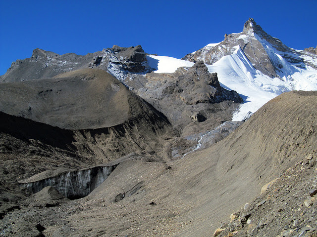
Когда ты уже свыкся с плывущим темпом и легким давлением в висках на горизонте замаячили буддистские флажки. Вот и финиш, вот и всё!
Дотопали. 5 416 м. И фото “Здесь может быть кто угодно”
Рядом Tea House, в котором по сведениям одного отчета даже готовят далбат (!). Не проверяли, пару фото и на спуск, до 3 800 м, по расчетам ACAP 4 часа ходу.
После перевала вид распахивается на таинственные земли Мустанга. Издалека, да с высоты в 5 тысяч выглядит и вправду загадочно и эфемерно, как шпили сказочного царства.
_files/IMG_7938.JPG)
Хотя мы спускались, Лёше становилось хуже, будто действие таблетки прошло, а высоту сбросить еще не успели. Выглядел он как пьяный. Есть и пить отказывался.
А я всё не выпускала фотоаппарат из рук. Так хотелось сохранить в памяти эти уникальные места, путных кадров получилось не больше десятка.
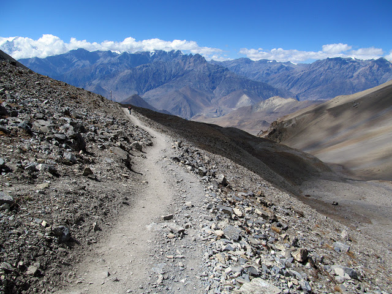
И вот спустя часа 2 шуршания по безжизненным камням глаз остановился на зелено-желтом скоплении точек еще очень далеко, глубоко впереди … Как оптическая иллюзия, как мираж в пустыне стала различима долина Муктинатха - наше пристанище на эту ночь.
_files/IMG_8042.JPG)
Оставалось совсем немного до первого лоджа на нашем послеперевальном пути, как слева от тропы проявился серпантин, которому могла бы позавидовать сама Дорога Троллей. История ее прокладывания такова, что какой-то богач с Тайваня вздумал забраться на Торонг Ла, да акклиматизации должного времени не уделил. На перевале почувствовал себя плохо, и так, что чуть не помер. После благополучного возвращения выделил грандиозные средства на строительство дороги, чуть ли не к самому перевалу (!!!), чтобы вот таких бедолаг могли скорее эвакуировать чуть им станет нехорошо. Но непальцы во время одумались, так до конца дорогу не достроив. Такая история, только зря склон исполосовали...
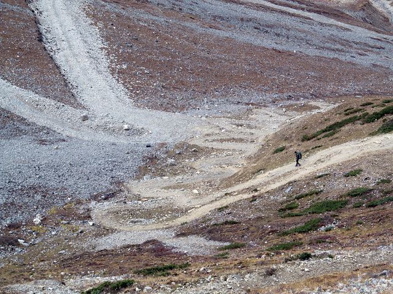
Чем ниже мы спускались, тем больше одежды снимали. Постепенно становилось очень хорошо и по-осеннему тепло.
Святое место буддистов и индуистов было совсем рядом.
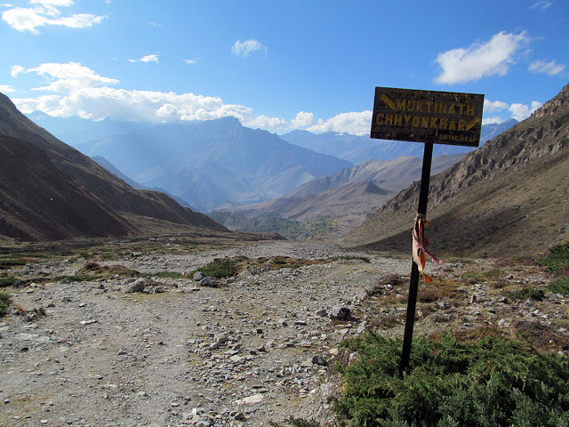
Взобрались на последний холм и вот он - рай посреди пустоши и каменных великанов, раскинулся в живописной долине. Будто библейский сюжет воплоти. Глаз не оторвать!
Чуть левее Ранипаува, издалека выглядящая чем-то очень любопытным и необычным.
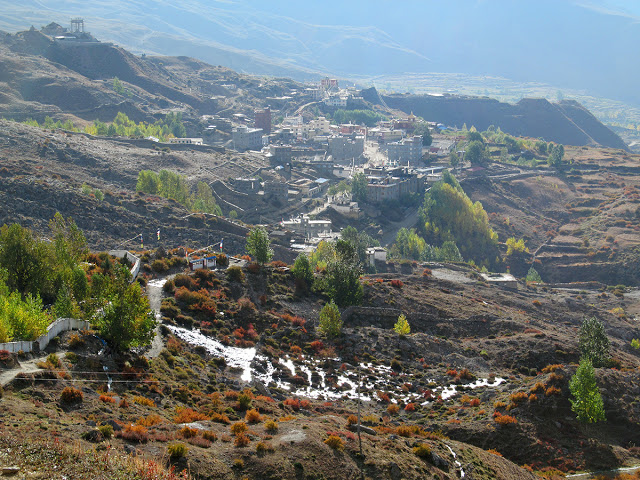
Мы на подходе, идем мимо белого забора с колючей проволокой и молитвенным флажками на ней, за ним храм Вишну, который увидим завтра. Странное сочетание для святыни.
Идем верной дорогой паломников, только в обратном направлении. Об этом молчаливо говорят бесчисленные пестрые ленточки на кустарниках.
Мы одурманены: ранним подъемом, долгим путем, великолепием пейзажей, проявившимися симптомами горняшки. Надо найти ночлег. Заранее ничего не бронировали, не изучали. Как всегда надеемся на доброе зазывчевое лицо и знак
Этим знаком стали мелодии Creedence Clearwater Revival, кто не знаком с этой четверкой из Сан-Франциско - непременно познакомьтесь! Влюбленность с первых звуков. Они доносились из отеля Боб Марли. Что это такое мы еще не знали, но подозревали Вторым знаком стал наш знакомый из Амстердама - Ник Правда он остановился в отеле по соседству. А вот и подоспел администратор, улыбчивый и располагающий, знак третий. За беседой выяснилось, что комнаты у них бесплатные, если будешь кушать в их ресторане. Без лишних вопросов - остаемся!
Смыли пыль и грязь, оделись в благопристойные одежды и пировать, отъедаться!
А над меню то работает шеф-повар из Австралии! Что за сказочное место - этот отель Боб Марли!?! Ощущение было, что оказались где-то на европейском или американском континенте, но с непальским колоритом. Музыка, люди, интерьер - всё создающее такое ламповое настроение. Все такие расслабленные, румяные, чистые, с плавающей по лицу улыбкой. У многих сегодня был последний день на треке. Завтра на джипе в Джомсом, а оттуда самолетом в Покхару.
Вечер трудного дня прекрасен!
9 октября. День одиннадцатый.
Маршрут и высота: Muktinath (3800 м) - Dzong - Kagbeni (2 800 м) - Jomsom (2 720 м)
Пройденные км и время: ~ 22 км, 11.00-19.30
C утра на свежий глаз Ранипаува изнутри выглядела довольно заурядным поселением: хаотичная застройка, вбитые, но не продолженные в дом, сваи, провода то тут, то сям.
Вид из окна скрашивала конусообразная вершина восьмитысячника по имени Дхаулагири.
Завтрак у меня был истинно американский: фри и бургер из яка! А что, калории - то, что надо с утра для подзарядки на длинный треккинг.
На фоне звучала релаксационная и позитивная Om Mani Padme Hum. До селе с Непалом не ассоциировалось “сюда я обязательно вернусь”, а вот этим лучистым умиротворенным утром забродили мысли в голове “а тут неплохо, надо бы посмотреть еще какие-нибудь треккинги, и обязательно наведаться сюда еще”. Действительно, после преодоленного перевала, всего увиденного, внутри было как-то грустно и тоскливо, что скоро, через пару дней, отлет. В Непале действительно хорошо и в каждом уголке он такой разный, неповторимый, что возвращаться можно не раз, и не два.
Изучим достопримечательности Муктинатха и пойдем обходным путем до Джомсома через так полюбившуюся многим деревушку Кагбени.
Прошлись по главной улице Ранипаувы туда-обратно: жилые домики перемежаются с отелями. Хаос, хаос и еще раз хаос. Уличные торговки шалями, носочками. Праздношатающиеся мужчины.
Впереди нас ждала встреча с чем-то символичным, имеющим огромное значение для верующих.
Я не расскажу про это место исторических фактов или проникновенных речей, т.к. мне это не близко. Но говорят аппетит приходит во время еды. Это я имею ввиду, что только интересуясь и углубляясь во что-то, ты проникаешься и превращаешься в верующего, не обязательно религиозного.
Вкратце
“Индуистские паломники называют это место Мукти Кшетра ("место освобождения, спасения, исцеления"), буддисты называют его Чумминг Гьятса ("сто священных вод"), место, где обитают богини Дакини, которые приносят исцеление и благополучие. Здесь находится небольшой древний храм Господа Вишну. Он считается одним из восьми самых священных индуистских храмов. Другие семь — это Шрирангам, Шримушнам, Тирупати, Наймишаранья, Тоттадри, Пушкар и Бадринатх. Позади храма есть 108 священных источников с ледяной водой, которые расположены полукругом. Считается, что паломник, принявший омовение в 108 источниках, очищается от грехов прежней жизни.
Муктинатх — это единственное место на земле, где соединяются воедино 5 священных начал – огонь, вода, небо, земля и воздух. Дхола Мебар Гомпа – «храм священного огня» и есть то место, где паломник может увидеть языки пламени божественного огня, пробивающегося из-под земли и услышать журчание подземного источника.”
_files/IMG_8144.JPG)
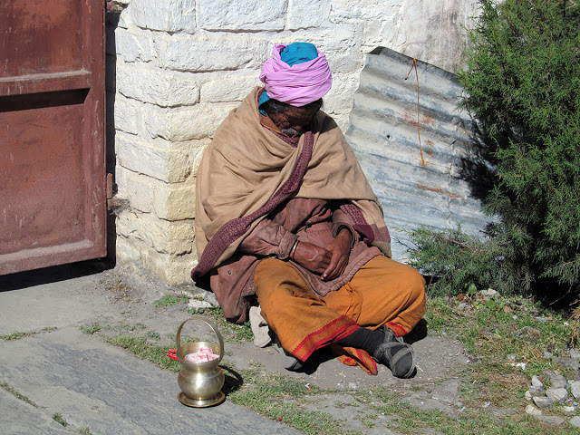
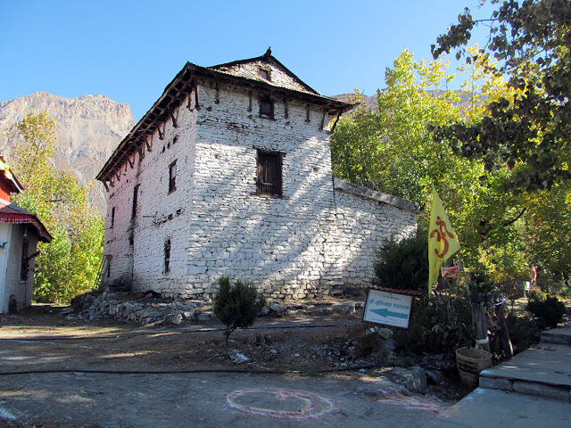
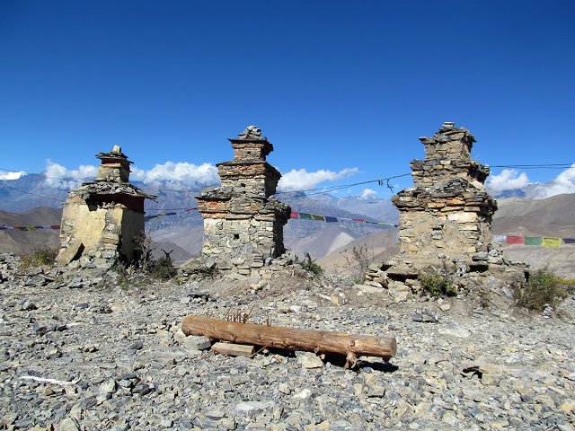
Атмосфера специфическая на территории храма: всё как-то неряшливо, не уютно, возле источников полуголые вытираются после омовений или окунаний. Много зевак как мы, может мы всё и портим
Пойдем-ка отсюда. Впереди еще столько всего! Ведь каждый день на треке вокруг Аннапурны разительно не похож на предыдущий.
В Муктинатхе помимо храма Вишну множество ступ и три буддистских храма. Место намоленное - что говорить! Но мы спешим покинуть пределы сего царства, чтобы увидеть побольше природных чудес.
Выйти на дорогу без жилых построек оказалось не такой простой затеей. Они шли нескончаемой чередой. Хотя, не скрывая скажу, что на быт местных глазеть любопытно.
_files/IMG_8165.JPG)
_files/IMG_8196.JPG)
Перевал красовался теперь уже с другой стороны. Смотришь на него, так и не дашь 5 400 м.
Муктинатх также закономерно отдалялся, как и появлялся после перевала, а навстречу попадались сюрреалистичные зарисовки: вновь пустынная местность, следов цивилизации особо не видно, ни души, но если присмотреться, то проглядывает ниточка непонятьоткудавзявшегося “танцующего моста”, натянутая через каньон пересохшего русла горной реки.
Потом вдруг показался известняковый акулий плавник.
Одинокая солевая (?) блямба
На этой дороге треккеров единицы. Пара-тройка велосипедистов и 2 пешехода. В остальном всепроникающая свобода. После полудня ветер стал подниматься и танцевать танго или же фламенко с завидной страстью. Укрыться от его пылких объятий, а иногда пощечин было не просто. Перекус не увенчался насыщением, т.к. ветер решил заглянуть в наше ненадежное укрытие и всё мгновенно припорошило пылью и песком.
Самой яркой картиной на треккинге вокруг Аннапурны для меня явился непередаваемый никакими визуальными или вербальными средствами вид на долину реки Кали-Гандаки. Я никак не могла насытиться им! Не хотелось спускаться, хотелось воспарить ястребом, сделать головокружительный полет над прекрасной испещренной сотнями ручейков долиной. Она восхитительно живописна!
Кагбени с высоты было сложнее заснять, т.к. ветер сбивал с ног в прямом смысле слова. Вихри пыли взлетали метров на сто, неистово кружили и не знали предела. Ухватиться можно было только за Лёшу, но и его сносило. Мы смеялись, что дурные, т.к. такой силы ветра в своей жизни еще не видывали и не чувствовали! На него можно было “облокотится” или же сражаться за право сделать пару кадров, буквально прорываться кулаками!
Порезвившись вдоволь с ветром мы прошли на знакомство с Кагбени.
Кагбени - это былой форпост на торговом пути из Индии в Тибет, ныне любимое треккерами место ночлега, трапезы или просто отдыха.
_files/IMG_8351.JPG)
Была мысль здесь остановиться: часы показывали около 16.30, мы были потрепаны ветром и песком, я уже чувствовала мозоли в нескольких местах на стопах. Но знали, что в Покхару лучше выезжать если не с первым лучом Солнца, то хотя бы с первым возможным автобусом, т.к. дороги в Непале - аттракцион! непредсказуемая субстанция!
Выходя из Кагбени навстречу шли треккеры, закутанные в арафатки, одно сплошное тело, без шеи, носа, глаз. Ветер-разгуляй никак не думал униматься!
_files/IMG_8424.JPG)
Прошли через заброшенную деревушку Старый Кагбени, тропа соединилась с дорогой и началось веселье! Водители проезжающих джипов, фургонов, автобусов показывали высшее мастерство вождения!
_files/IMG_8447.JPG)
В придачу к ухабистой дороге вдоль реки без ограждений ее переходили горные козлы на пути к ужину.
Сил оставалась совсем кроха, а Джомсом и не думал выглядывать в перспективе. Мозоли я теперь ощущала очень явственно, каждую: на пятке, на мизинце и большом пальце на правой ноге и еще пару на левой.
Солнце скрылось, накатывали сумерки. И немного страха. Лодж в темноте мы еще не искали и приключением это не попахивало. День казался нескончаемым
Вот! Вдалеке засверкали жестяные крыши. Должно быть это он! Ура!
Когда видишь цель, путь обретает смысл.
К городу мы подходили уже во тьме. Я хромала, ступать было очень больно.
При ночном освещении все выглядит иначе. На главной, по-видимому, улице скудный свет. Еще совсем не поздно. Часов семь. Работают забегаловки, горят вывески отелей. Никто не зазывает, все уже набрали постояльцев на сегодняшнюю ночь. Осматриваемся и на поиски.
В отеле Боб Марли в Ранипауве улыбчивый администратор дал визитку отеля Xanadu в Джомсоме, который принадлежал его другу, но в малопроглядной темени мы его так и не отыскали. Заходили во все попавшиеся на пути, но во всех были заняты комнаты. Прямо напастие какое-то, никогда с таким не сталкивались на треке. Может это все паломники, которые прилетают сюда, проводят акклиматизацию, а утром на джипах отправляются в священные земли Муктинатха. У реки встретили вооруженных автоматами военных, наверное. От этого стало очень не по себе. Вернулись оттуда, откуда пришли. Слева по-новогоднему ярко светился с виду ну очень буржуйский отель. Четырехэтажная махина с громким названием Hotel Pride&Spa, что она забыла среди гималайских восьмитысячников, такая пафосная?..
Подумали - вариантов не много, точнее ни одного. Зайдем! Ничего не теряем. На рецепции никого не оказалось. Отправились искать по зданию, по убранству очень напоминающего образец исконно советской гостиницы, как навстречу вышел непривычно лощеный молодой человек, лицом направленный в мобилу. Как я и рассчитывала, такой же пафосный, как и отель снаружи. Завязали разговор, администратор по-прежнему был увлечен происходящим в телефоне больше чем нами.
Лёша задал вопрос: Do you have free room for tonight?
Теперь мы завоевали 100% его внимания. Уставившись на нас в упор, он произнес с ехидной усмешкой: у нас высококлассный отель и в мире капитализма нет ничего бесплатного, как и бесплатных комнат. Выдав этот экспромт он вновь погрузился в телефон, вероятно решив, что мы бродяги-тунеядцы.
Я же, изможденная от бесконечности дня, напуганная шатанием по темным улицам незнакомого и негостеприимного города, уставшая от затянувшихся поисков ночлега рассерженно спрашиваю, сколько стоит комната.
Он называет сумму. С числами на английском у меня всегда было плохо. Общаемся с Лешей взглядами, говорим спасибо телефоноадминистратору и выходим на улицу. Как груз с души! Вдыхаю воздуха и спрашиваю у Леши: комната стоит 150$? Лёша говорит, что 15$. Я еще не могу отойти от диалога с агрессивно-апатичным администратором и возвращаться не хочу.
Пойдем поищем что-нибудь еще. Тут я вспоминаю, что у входа в одну из забегаловок была приписка Lodge. Может там что-то будет?.. Заходим: женщина и 2 мужчины. Спрашиваем, есть ли комната. Комната есть, застенчиво и стыдливо проводят в оную. Говорят, что туалет на улице, удобств никаких. Стоимость - 300 рупий, т.е. 3$. Осторожно присаживаюсь, будто бы боюсь кого-то потревожить, на явно не свежие простыни. Хорошо то как!! Это ноги мои “заговорили” Им очень хорошо, чувствую пульс в мозолях на пятках и большом пальце.
Начинаю осматривать нашу каморку. Находится она сразу за кухней, где хозяева что-то готовят, бурно обсуждают, смотрят плазму. 2 кровати, диван (хозяева тут же, наверное, будут спать..), потертые стены, местами с фанерой, брезент на потолке, шуршит словно мыши по углам бегают. Неуютно, неопрятно, нечисто. Бррр.
Лёша уходит поискать еще чего-нибудь.
Вернулся - ничего.
Я еще раз переспрашиваю: “А этот Спа точно 15$. Чего он так пафосно с нами говорил? Это ж немного”
Монета брошена - возвращаемся к недружелюбному администратору в “высококлассный” отель за углом.
Перед хозяевами захолустного лоджа (который может вовсе и не лодж, да они пожалели запыленных “нетрезвых” от усталости треккеров) не удобно. Извиняемся, протягиваем 100 рупий хозяину и виновато проходим к выходу.
Вдыхаю воздуха! Стоял бы выбор: палатка или спа отель. Палатка однозначно, но был только спальник…
Вновь у распахнутых дверей в Hotel Pride&Spa, администратора будто подменили. Улыбается, кланяется, проводит в комнату, демонстрирует, уточняет, нравится ли?
Ого! Свой туалет и душ?! Ого, зеркало! Унитаз! Фантастика!
А что может тут не нравится Мыши не бегают, стены чистые - отличный вариант.
Спрашиваем можно ли поужинать у них. Через пару минут приходим в ресторан. А администратор услужливо советует подняться в еще один зал на верхнем этаже с панорамными окнами. Выбираем столик, конечно, у окна.
Вот это да! Еще не полночь, а враждебно настроенный админ из тыквы превратился в преприятнейшего человека! Непередаваемое удивление!
Заказ принесли быстро. К нам подошел еще один молодой человек, сказал, что он владелец этого отеля. Поинтересовался, какая музыка нам нравится. По своему наитию нашел диск Джека Джонсона, серфера-музыканта с Гаваев, потушил верхний свет и зажег приглушенный напольный и боковой.
Ну теперь у меня даже никаких эпитетов не подбирается! Вот так награда за все испытания сегодняшнего дня!
Директор - общительный и инициативный. Рассказал про бытие-житие их, его отеля, планы на будущее. Сейчас он организует велопрогулки, а в скором времени хочет еще скалолазание (благо, разгуляться есть где и каякинг.
У таких людей горят глаза и конечно у них всё получается! Такие люди не унывают! Он дал свою визитку. Зовут его Sandip Gurung. Будете проходить мимо - не проходите, загляните и хотя бы пообщайтесь. Зарядитесь энергией! Может и скалолазание уже можно попробовать?!
10 октября. День двенадцатый.
Маршрут и высота: Jomsom (2 720 м) - Ghasa (2 085) - Beni - Pokhara (820 м)
Преодоленное расстояние и время: ~ 160 км, 06.30-20.30
Проснулись спозаранку, позавтракали и поспешили на первый автобус до Бени.
И на этот день у меня был фотоаппарат, а заряженных аккумов в нем нет. Зарядка умерла в одной из непальских розеток. И я осталась без главного “оружия” в своих руках, поэтому рассказ об этом дне будет на мобилофото
Вид из комнаты: под окнами - трущобы, в перспективе - вдохновляющие гребни гор, припудренные на вершинах сверкающим снегом.
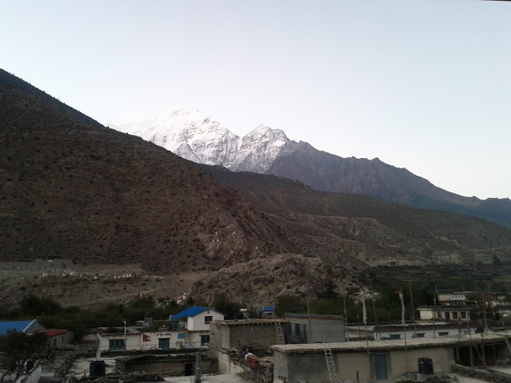
По левую сторону строение, напоминающее буддистский храм, возле него сгруздились джипы и автобусы.
А вот и отель, в утреннем освещении не кажущийся шибко пафосным. Из него вываливается индийская семья и фотографируется всем семейством на фоне его стен, как-будто бы с достопримечательностью.
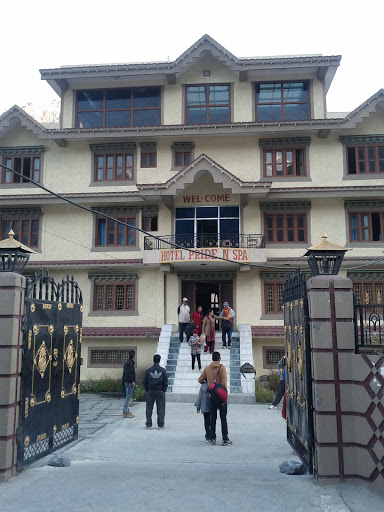
Где точно автобусная остановка мы не знаем, мы и не видели их в Непале еще. Как они выглядят? Сандип сказал, что остановка находится сразу за рекой.
Толпа разношерстной публики у сооружения, похожего на деревенский туалет. Всё на непальском, раздвоенная очередь за билетом (?)
Становимся в одну, перебегаем в другую, потом обратно в первую. Ничего не понятно. Даже возвращаемся к нашему отелю, где было скопление джипов, но там отправление только на Муктинатх, так что первоначально мы все-таки пришли в правильное место, но автобус, видимо, задерживается. Удивляемся? Не то чтобы
Спустя полчаса от расписания прикатывает в развалку тарантас ТАТА.
Гурьбой толпа штурмует единственную узкую невысокую дверь.
Мы следуем за ними, приходится преодолевать запасное колесо сразу у входа. Мест впереди и посередине не остается, самые вакантные - задние сиденья специально для нас, так чтобы запомнилось!
Уселись, расстояние между креслами как раз на непальца Чтобы бы делал тут наш двухметровый дядя Степа сложно даже представить. Рюкзаки держим при себе. Немного волнительно. Доедем ли? Оцениваем пространство вокруг нас.
Как думаешь, допрыгнем до потолка?
Еще бы!
Рядом с нами парочка модных непальских мальцов. Красивые! Такие лица у азиатов (монголы, тибетцы, непальцы) необычные, привлекательные. Такая красота, вроде бы простая, но глаз не оторвать, испытываешь истинное эстетическое удовольствие!
Трогаемся, движемся медленно. 5 метров, остановка. Добираем пропащих.
Едем. 20 метров. Остановка. Добираем еще одних. Стоим. Кто-то залез на крышу, что-то крепят, кого-то ждем.
Едем. 50 метров. Остановка. Добираем еще кого-то. Приносят какую-то живность. Но вроде не в наш автобус. Солнце выглянуло из-за гор, на часах 8 утра. Вздремнуть что ли? Ан-нет, тронулись.
Едем, едем. Стоп. Остановка, еще кто-то подсаживается, точнее уже занимает место стоя. А Джомсом то - огромный город!
Ну всё, поехали-погнали!
В пути минут 5! Счастье! Но снова остановка! Ну сколько можно?! Лёша человек сам по себе спокойный вытаращивает глаза от потери надежды выехать из Джомсома, сжимает-разжимает пальцы рук, вскинутые к крыше автобуса и утыкается беспомощно в рюкзак. На вверх снова что-то затаскивают и надежно закрепляют.
Готовится к взлету самолет-кукурузник, почему мы не в нем? До Покхары примерно 160 км… Нормальной дороги не видать до Бени и еще дальше.
Ну что? Теперь всё и вся внутри или на крыше? Можем ехать!
Поездка на непальском локал басе - это как все карусели и аттракционы парка развлечений вместе. Некоторые из них непредсказуемые, некоторые доводят до тошнотиков, некоторые кружат голову и нарушают равновесие.
Я как человек от пальцев ног и до кончиков волос эмоциональный, первые минуты задавала мелодию переваливающегося из стороны в сторону тарантаса, выдавая то “Оооой”, то “Аааай”, “Огооо”, “Ииииии”. Хватаясь за всё, что было возможно, чтобы не вывалиться в проход. Одновременно и жутко страшно, и безумно весело!
Непальцы смотрели удивленно! С одними у нас завязался довольно долгий, любопытный разговор. И кроме того, что это было крайне полезно, так еще и отвлекало нас от взглядов на сумасшедшей глубины пропасти и ущелья, в которые могла неудачно подпружинить наша жестянка.
Эти непальцы оказались образованными молодыми ребятами, которые так же, как и мы путешествуют, только налегке, т.к. запланировано немного: они побывали в Муктинатхе и сейчас направляются в Татопани, полюбоваться Пун Хиллом на рассвете. Интересовались, откуда мы узнали о Непале и неужели у нас в школах учат высшие точки, самые длинные реки и т.п. Были горды, что о их не совсем большой и выдающейся стране знают не только заимев цель пройти вокруг Аннапурны. А они знавали про Беларусь, спрашивали, какие у нас зарплаты и очень дружно захохотали, т.к. были бы не прочь тоже стать миллионерами
Одна не лицеприятная черта была подмечена: эти 2 дружелюбных и образованных непальца на одной из остановок взяли то ли сидра, то ли просто яблочного сока в бутылке будто из-под шампанского, умудрились пролить часть его на бритую голову монаха во время сильных встрясок непутевого ТАТА и с горем пополам одолев бутылку просто вышвырнули ее за окно (!!!!!) Шок!! Даже получив образование это далеко не дает гарантий, что человек не будет гадить на природные сокровища. Это, наверное, в крови и этого не отнять.
За окном менялись пейзажи сначала с тоскливо белесых на пыльно-кустарниковые, затем все больше набирающие жизни, буйства оттенков зеленого и салатового. Дыхание тропиков становилось все ближе.
А мы уже немного подустали. Аттракционом насладились вполне, но не преодолели еще и половины. Удалось даже вздремнуть, взяв пример с невозмутимых двух мальцов, которые были “в отключке” чуть ли не с самого старта.
Открываем глаза, автобус стоит под кронами деревьев, пассажиры стремительно покидают салон. Складывается ощущение, что все знают что-то, чего не знаем мы. Решаем податься общему течению, но мужчина, сидящий рядом, выставляет руку, преграждая нам путь. Ну ладно, мы сонные и не совсем понимаем, что происходит.
_files/IMG_20141010_105044.jpg)
Автобус нежно начинает трогаться. Также нежно продолжает двигаться, боясь нарушить чей-то покой. Лучше сказать он крадется, сама осторожность, метров 40-50. Тормозит. Заваливается толпа. Мы спрашиваем у образованных знакомых:
- Что было то?
- А вы не поняли? Был опасный намытый ручьем участок, слева - пропасть. Водитель не был уверен, проедет он его или нет. Поэтому все пассажиры вышли. You are lucky, guys!
Ха-ха, ага, в рубашке родились! Никогда не знаешь, что тебя и где подстерегает. Жизнь - прекрасная штука!!
А на секундочку:
Двигались мы по “самой глубокой долине мира между двумя вершинами восьмитысячниками - Аннупурной и Дхаулагири. Вершины возвышаются над долиной примерно на 5.5 км и отстоят от реки менее чем на 20 км”
Далее проехали мы недолго, перед нами образовался затор в виде такого же тарантаса, только с отвалившейся важной ходовой частью!
Идем, разомнемся! Гхаса совсем близко.
Впереди завиднелась автобусная станция. Боже мой, сколько их?! Какой же наш!?
Лёша пытается выяснить, где нужный нам автобус. Таких же потерянных бледнолицых здесь много.
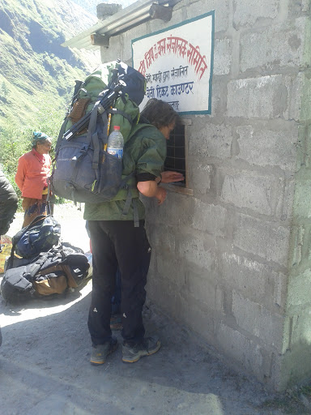
Подбегаем к автобусам, спрашиваем, куда. Нам отвечают, что в билетах смотрите, там будет гос.номер нашего автобуса. Взгляд в билет, на гос.номер близстоящего автобуса и вязь в глазах. Ничего ровным счетом не понятно! Паника!
Добиваемся нужной нам правды. Автобус найден! Похоже придется ехать стоя, но самое страшное: наши рюкзаки забросят на крышу!! Будем думать о хорошем и верить в лучшее! Веревкой то их повяжут...
Место находится, даже усаживаемся вдвоем, прямо за водителем, только спиной. И боковым зрением к кустисто-водопадной стенке, т.е отвесный обрыв снова мимо. Дважды проносит за день!
_files/IMG_20141010_123134.jpg)
Как мы смело лавировали необузданные ручьи из-под водопадов я заснять не успела, т.к. пользуясь всё время моим олдскульным кнопочным телефоном, я не смогла приобрести мгновенный навык “включать, фокусировать и нажимать” на сенсорный экран Лёшиного смартфона.
И только во время туалетно-обеденного перерыва мне удавалось что-то поймать на мобильный “фотоаппарат”.
Даже, что творится в кабине бесстрашного водителя ТАТА
Что еще отличает поездку на ТАТА по горным серпантинам от всех прочих, так это гремящие во всю громкость колонок задорные, жизнеутверждающие песни непальских поп-исполнителей. Двигаешься в такт, подпеваешь в припевах и мысль о смерти не кажется уже такой фатальной.
А вот мысль о том, доберемся ли мы сегодня до Покхары, все менее реальна на фоне “картины маслом”: впереди снова пробка и время ожидания под знаком вопроса…
Потерявшие надежду, а может имея на сегодня конечной точкой Татопани, сгружают с крыши свои рюкзаки и отправляются пешком. Но нам до Бени не так близко. Мы находим успокоение в любовании безграничными гималайскими холмами.
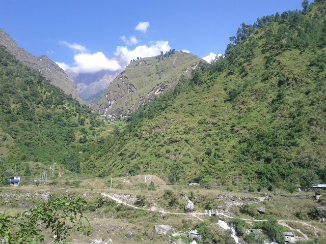
В автобусе становится посвободнее, занимаем любимые места, спустя какое-то время продолжаем Путь.
Вечер не за горами, которые уже поглотили солнце своими массивными плечами.
Снова дремлем, время включается в режим “ускоренной перемотки”.
Открываем глаза: Бени!!!
Мы рады, выпрыгиваем, хватаем рюкзаки. План действий: где, сколько, на чем?
Все мои эмоции копиркой проявляются на лице, непалец ловит их, одно нужное слово-вопрос: “Покхара?” А верно ведь! Закидываем поклажу в багажный отсек и как барыни-сударыни проходим в турист бас, он уж точно должен быть покомфортабельнее.
И правда: персональный “кондиционер”, места для ног поширше.
Выбегаю взглянуть на Бени: захолустный городишко, пыльный, чумазый, будто беспризорный...
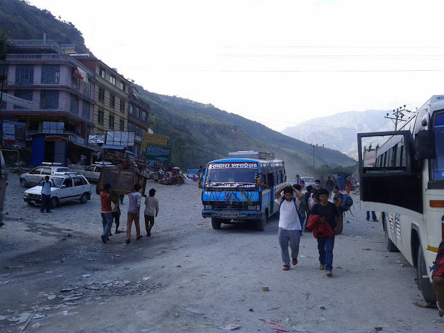
После Бени дорога улучшилась, хотя временами попадались и нежданчики.
Что было потом? Стемнело, серпантины продолжились, мелькающие огни деревенек свидетельствовали, что мы еще в дороге. Сколько времени мы уже в состоянии дороги, сказать сложно. Вам тоже кажется этот день невыносимо бесконечным?
Но от нас здесь ничего не зависит. Поддаться воле случая, не более.
Серпантины пропали, выехали на финишную прямую. Покхара, встречай!
Автобус делает несколько остановок, как наши маршрутки, по просьбе. Мы выпрыгиваем на одной из них.
Одно наблюдение, весьма удобное: в Непале тебе по большому счету не нужно думать, где остановка, где поспать, на чем доехать, откуда отправляется, что поесть. Все эти не успевшие толком возникнуть в голове вопросы с ловкостью решат внимательные непальцы.
Только мы выпрыгнули из турист баса, как попали в руки таксиста. Мы даже не предполагали, где здесь и что, а он уже побежал за нашими рюкзаками. Услужливый с головы до пят. Лёшу угораздило ступить и провалиться по пояс в какую-то яму, он ему помог выбраться и отвез нас в туристический район, переполненный отелями и кафе и ресторанам на любой вкус.
Не успели мы выйти из такси, нас ожидал дворецкий, в самом деле, таков он был. Завел в домашний отель, плохо говоря по-английски, попросил ожидать, не объяснив причину. Мы ожидали, поражаясь сервису и немного беспокоясь, т.к. прошло минут 10-15, пока вернулись хозяева и провели нас просто в барский номер по всем меркам в сравнении с доселе виденным покоями
Задачей X было раздобыть зарядное для аккумов. Но прежде мы отужинали в прекрасном ресторанчике, набитым свободомыслящими босыми европейцами. Официант был очень доброжелателен, обходителен и словоохотлив. Поспрашивали про дорогу до Катманду, на что он ответил, что басов до столицы ходит большое множество и ходят они очень быстро, дословно: “бум и вы в Катманду!” Мы расплылись в довольной улыбке, с ужасом вспоминая сегодняшнее путешествие! Настоящее, незабываемое! Но достаточное в едино разовом приеме
Зарядное не составило проблемы найти. На часах 21.30-22.00: Покхара бурлит, горит, открыта всем и вся. Магазинчики продовольствия, шмоток, сувениров - всё для вас, дорогие туристы. Непальский курорт, короче говоря.
Более близко познакомимся с ним завтра. До встречи!
11 октября. День тринадцатый.
Маршрут: Pokhara - KTM
На Покхару у нас было пару часов, взглянуть одним глазком, как в тех экскурсионных турах, где за 5 дней посещают Варшаву, Берлин, Париж и Амстердам.
Но что сразу становится понятно, только ступив из отеля: Покхара - это курорт, здесь обитают невымершие хиппи, йогины и йогини, свободные художники.
“Покхара - рай ничегонеделанья, здесь проводят дни то с книгой в саду, то в кафе, где можно познакомиться с другими путешественниками и обменяться впечатлениями.
Покхара - исходный пункт многих экспедиций и маршрутов треккинга к горам Аннапурна и Дхаулагири”.
Мы отправились из отельного района к знаменитому озеру Фева (это второе по величине озеро Непала) через центральную улицу.
У озера сдают в прокат лодки
_files/IMG_8495.JPG)
Тут же ловят рыбу, умываются и стираются
_files/IMG_8496.JPG)
Движение Green Clean Pokhara заботится о раздельном сборе мусора
Набережная - чудесное место для прогулок и пробежек, ну и попрошайничества.
Совершив променад вдоль озера мы обосновались в одном из кафе. Меню было на несколько страниц! На завтрак можно было выбрать аж из 7 различных сетов (легкий/тяжелый, мексиканский, сырный, с сосисками, лемон грасс), представляющий собой ассорти из 5-8 составляющих (каша, тост с джемом, картофель, томаты, бекон, яйца различных вариантов приготовления, сок, чай/кофе и др.). Стоило такое удовольствие 1.5-3$.
С холма по соседству стали взлетать парапланеристы, в воздухе царили спокойствие, неспешность бытия, гармония.
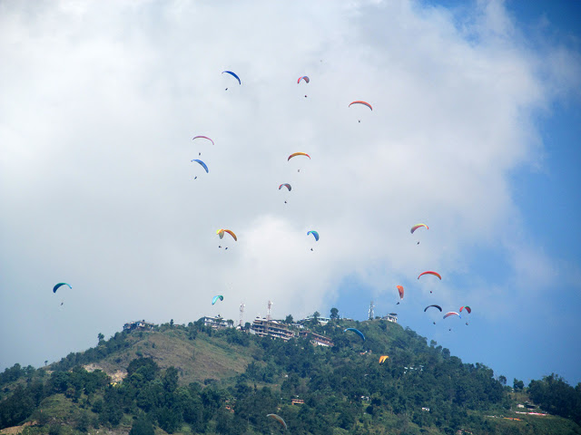
Здесь вполне себе можно жить, работая на удалёнке.
Но как бы там ни было распрекрасно и мечтательно на душе, пришло время отправляться в Катманду.
Еще раз прогулялись по колоритному даунтауну.
За метров 500-600 до отеля нас подхватили пару ребят-таксистов, каким-то образом почувствовав, что нам необходимо добраться куда-либо. Да! Это предвосхищает все возможные ожидания - такая их предусмотрительность. И через каких-то 15-20 минут мы уже сидели в микрике на Катманду.
Т.е. понимаете, мы даже не успели выйти из такси, не знали расписания рейсов автобусов, не знали, где именно находится автостанция и касса, как мы уже сидели на местах в автобусе, следующем в нужном нам направлении. Вот как? Как это работает у непальцев? Чуйка? Суперсервис!
Покхару и Катманду разделяют примерно 200 км, дорога асфальтированная, поэтому едем с ветерком, даже не успеваю фокусировать объектив на нужных мне картинках.
На коротких остановках к нам подбегает ребятня и толкает воду, чипсы, расплачиваемся можно сказать на ходу.
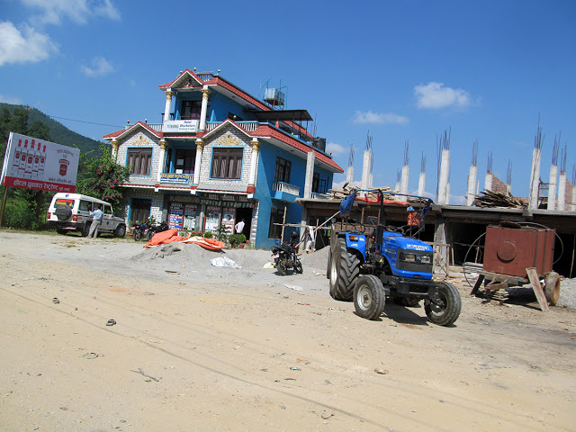
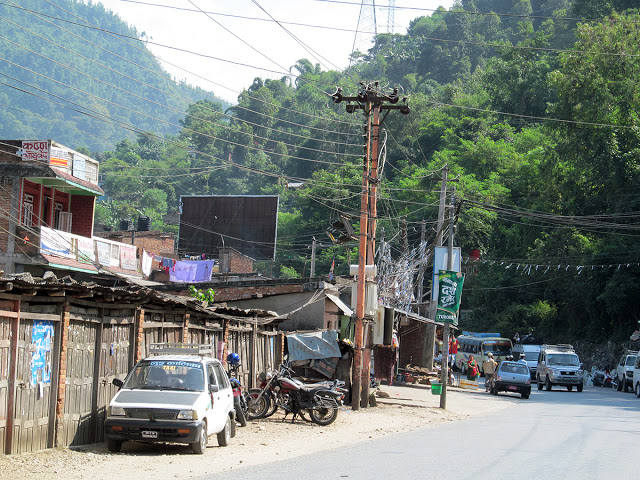
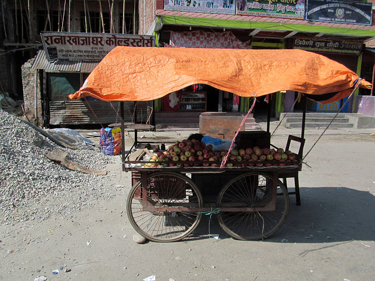
Через какое-то время дорога стала уже узнаваемой, т.к. по ней добирались до Бесисахар.
Остановились на туалетно-обеденный перерыв.
Наш микрик был воплощением поп-арт искусства.
Лёша достал термос, который чудом не вывалился, и примерился, как было бы круто ехать на крыше!
До Катманду оставалось совсем немного.
В центр Катманду забрались в этот раз быстрее, нежели выезжали из него в первый раз. Как можно было уже предположить и давно расслабиться, только мы спрыгнули на столичную землю, нас с распростертыми объятьями ожидал таксист, помог с рюкзаками и закаулками отвез в Тамель.
А в Тамеле, что в Крыму, предложения по размещению сыплются со всех сторон, можно сказать в руки засовывают буклеты, в ухо кричат расценки 20-15-10$ с промежутком в секунду.
В 1973 г. в Тамеле были открыты первые отели. С тех пор этот район быстро развивается, процессу его развития не видно конца, прокладываются все новые боковые улицы.
Отели друг на друге. Здесь сконцентрированы в основном отели среднего и низкого класса, поэтому особо можно не выбирать.
Наш отель на 2 ночи выбрали по наитию, в нем даже был швейцар, при отеле - ресторан со скидочной системой для постояльцев и окно в номере выходило на оживленную улицу.
Номер в целом хорош, далеко не в каждой нашей ЖКХашной гостинице, будет такой интерьер.
На дверях табличка помимо прочего гласила:
“80% населения Непала не имеют доступа к чистой воде, пожалуйста, не растрачивайте воду, чтобы постирать свои вещи” Буржуи, блин!
Ресторан при гостинице круче всех ожиданий. Прелестный! Немного с электричеством были перебои, но это европейцу только в кайф - новые ощущения! Некоторые деньги платят за ужин в темноте, а тут - на халяву!
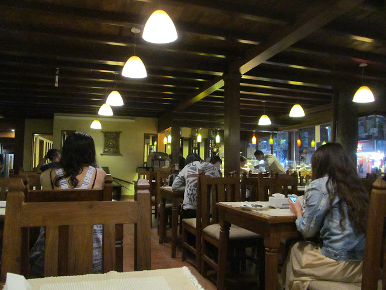
Завтра я желала всем сердцем обследовать Катманду, планов было громадье, посему мы рано улеглись, чтобы спозаранку поучаствовать в водовороте жизни непальской столицы.
12 октября. День четырнадцатый. Катманду
Утро началось с бельгийских вафель, английского завтрака, какао и чека, в котором мы разглядели, что в меню цены оказываются прописываются без налогов (13%) и обязательных чаевых (10%). Любопытно, но не критично.
По Катманду не раздумывая решили разъезжать на такси, правда за день воспользовались им только 3 раза. Некоторые достопримечательности были в пешей доступности друг от друга и мы не особо теряли во времени, преодолевая путь ногами.
Стоимость услуг такси варьировалась 3-7$. С таксистами о цене нужно договариваться заранее.
На повестке дня были:
Площадь Дурбар в районе Патан - сказочное каменное и деревянно-резное царство.
храм Пашупатинатх - одно из важнейших святилищ Шивы Индийского субконтинента, а заодно и городской крематорий.
Сваямбунатх - священная ступа на холме, легендарная колыбель долины Катманду.
ступа Буднатх в свое время была центром тибетского буддизма.
Все эти объекты включены в список всемирного наследия ЮНЕСКО и заслуживают детального рассмотрения.
Первым местом, которое мы посетили, стал Патан, некогда столица одного из трех королевств. В нынешнее время здесь трудятся мастера по обработке металла и деревообработке. Многие статуи, в том числе в монастырях Тибета, созданы именно здесь. Важные святыни сохранились во всем своем древнем великолепии.
_files/IMG_8616.JPG)
Главная достопримечательность дворцовой площади - Королевский дворец, состоящий из трех дворцов: центральный Мул Чоук, Сундари Чоук и Маникешар Чоук.
“Старый город в Патане содержит на пространстве примерно в 3 кв.км более 50 храмов-пагод, сотни святилищ и бесчисленные интересные магазины и мастерские. По улицам, где почти нет машин, можно без страха отправляться на поиски открытий”.
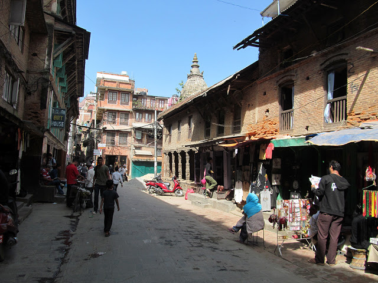
Что я больше всего ожидала увидеть - это Пашупатинатх, не скажу, что являюсь любительницей мерзостей, но этот храмовый комплекс сложно пройти стороной.
Вход платный, как и везде. На территории грязно, как и везде. И многолюдно.
“С мостов можно наблюдать жизнь у реки: вверх по священной реки Багмати у Арьегатов приносят в жертву цветы или совершают ритуальные омовения. На круглых платформах кремируют важных персон, простых смертных - в стороне, под гофрированным стальным навесом”.
Здесь много бедняков, которые “живут отчасти благодаря тому, что вылавливают из реки одежду умерших, недогоревшее дерево, золотые зубы и украшения”.
“Индуисты почти всегда кремируют своих мертвых: только таким образом можно освободить душу и подготовить ее к новому рождению. Кремация должна проходить на берегу реки, которая унесет пепел в Гангу или другую священную реку (все реки Непала впадают в Гангу).”
Лёше стало дурно и тошно, поэтому надолго задерживаться тут не стали, прогулялись на правый берег и вернувшись на левый, по ступенькам пошли в сторону ступы Буднатх.
По дороге путешественников развлекают садху, так называемые святые.
“Они могут быть скрытыми попрошайками или наглыми обманщиками, но также и высокоучеными мужами, ищущими просветления, или психологами, оказывающими верующим реальную помощь. Садху раздают продукты неимущим, на получаемые пожертвования основывают пункты социальной помощи и организовывают школы для бедных детей. Многие из них хорошо говорят по-английски, и побеседовать с ними всегда интересно”.
Мне кажется, что нам попались клоуны, т.к. представляли собой просто живые скульптуры, фотографирующиеся за money.
Ступа Буднатх виднелась вдали, мы обогнули индуистский храм Гухджешвари, тем самым покинув пределы Пашупатинатха.
Жилая застройка Катманду не имеет конкретного плана, всё погружено в хаос. Смешение стилей, животных, людей, постиранной одежды и пыли, достроенных домов и торчащей арматуры по соседству. Так здесь живут и видимо не испытывают потребности что-то менять.
Удивительная школа!
Ступа Буднатх - самая большая в Непале.
“Тибетские магазины, построенные вокруг монастыри и паломники, которые непрерывным потоком обходят ступу по часовой стрелке, составляют очарование этого места”.
_files/IMG_8753.JPG)
Здесь мы пообедали и на такси отправились в последний пункт на пути знакомства с Катманду в этот визит - ступой Сваямбунатх. Пока садились в такси, пока ехали на такси, откуда ни возьмись вылазили попрошайки: женщины, вполне себе опрятно одетые, мальчишки, выискивающие белых в машинах, стоящих в пробках.
“В доисторическое время вся долина была занята озером, которому она обязана исключительным плодородием своей почвы. Согласно легенде, Манджушри, Бодхисаттва Мудрости, пролетая над озером, заметил прекрасный цветок лотоса. Очарованный цветком, Манджушри решил осушить озеро. Своим волшебным мечом он рассек холмы, так что вода стала стекать на юг. Священный лотос оказался в осушенной равнине на вершине небольшого холма. Чтобы защитить святыню от грабителей позже вокруг нее была построена ступа Сваямбунатх, что в переводе с санскрита означает “саморожденный, возникший из ниоткуда””.
К ступе ведут 365 ступеней крутой лестницы.
Вид на раскинувшийся на многие километры Катманду открывался бесподобный! Жаль только, что дымка скрывала перспективу. Наверняка, ранним утром можно разглядеть заснеженные гималайские пики!
“Обходя ступу по часовой стрелке, можно изучить ее символическую форму: основание ступы символизирует землю. Над основанием возвышается куполообразная часть ступы, символизирующая воду. Шпиль над куполом - символ огня, а зонтик, установленный на шпиле, - воздуха. Всевидящие глаза Будды, изображенные на каждой из четырех сторон прямоугольного основания шпиля, смотрят в направлении четырех сторон света. Шпиль состоит из 13 ступеней, символизирующих 13 этапов на пути освобождения от сансары”.
На площади вокруг ступы множество сувенирных лавок с картинами, поделками, магнитиками.
Будда или только лишь его взгляд повсюду
Тут же есть небольшая парковая территория с шайками обезьян, порою довольно агрессивными. Одна пожилая дама подсказала, чтобы мы особо не улыбались во все зубья, а то обезьянки воспринимают улыбки не самым лучшим образом и могут напасть.
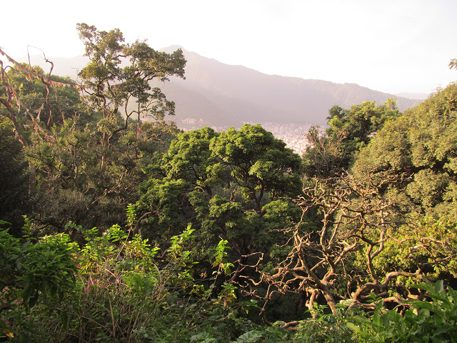
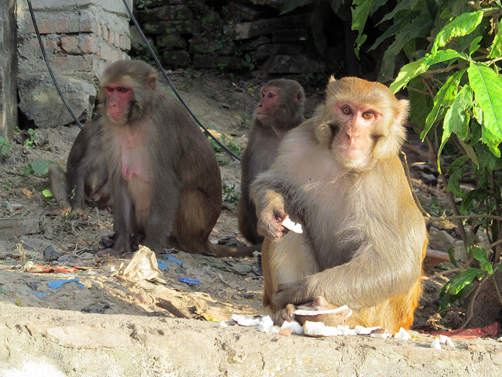
Собачье стаи тоже не редкость, гоняют с обезьянами друг дружку, чем сводят с ума пожилых туристов.
Так мы добрались до тибетских монастырей, взгляд вверх и небо соткано из разноцветных молитвенных флажков.
Солнце спускалось всё ниже, пора было возвращаться в отель, паковать вещи и собираться морально к завтрашнему отлёту. Дорога “домой” была как всегда колоритной: высокоэтажки как у нас, трущобы как в беднейших регионах мира, свалки, разруха, мусор, тут же скот, поросята, собаки, коровы, городская река-помойка, запахи, много-много запахов и всё сдобрено хорошим слоем пыли. Испытываешь и любовь за непохожесть, и непонимание, как так можно жить.
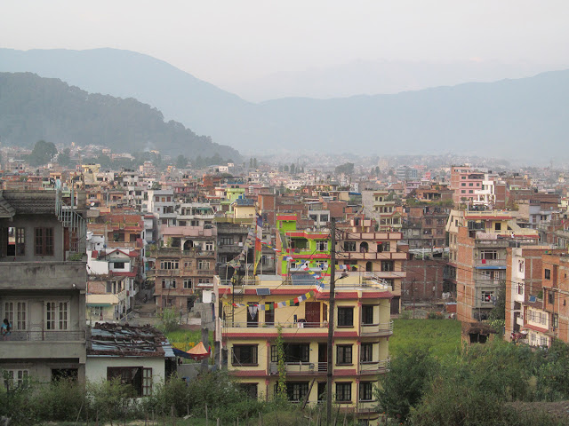
_files/IMG_8886.JPG)
А в Тамеле, нашем временном жилище, всё хорошо: сверкает, горит, каждый дом занят под отель или магазин со спортивной одеждой, обменник, ресторан, клуб, вывески друг на друге.
Этот день описан преимущественно благодаря путеводителю Полиглот издательства “АЯКС-ПРЕСС”, т.к. запомнить названия индуистских святых и храмов, легенд для не идуиста и не буддиста проблематично
13-14 октября. День 15-16. Дорога домой.
Вылетаем сегодня около полудня. Есть еще пару часов после завтрака сделать необходимые покупки и насладиться атмосферой заводного Катманду.
Магазинчики очень приятные, как и сами непальцы, весьма услужливы, доброжелательны и словоохотливы.
Последний торг на такси
Десяток минут и мы в конечной точке нашего путешествия по Непалу. В одно время и невероятно притягательного, и невозможно отвратительного.
Непал прекрасен и каждому стоит здесь побывать!
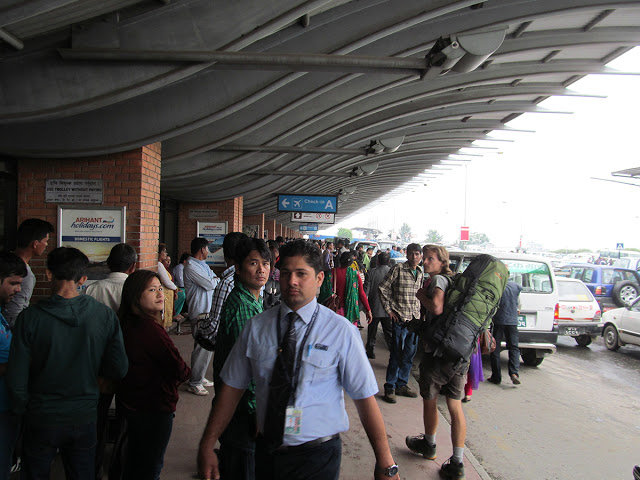
Пару фоточек напоследок о дороге домой
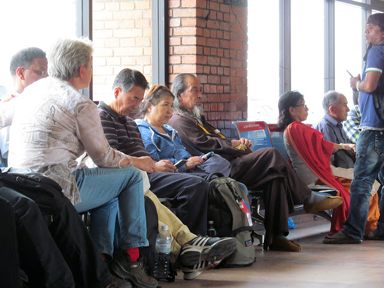
| | |